1.
Az ösvény, melyen el kell indulnod, igen hosszú, ugyanis a Skorpiók Mocsara a királyság legtávolabbi zugában fekszik, a nyugati végeken. Utad során sok olyan élményben lesz részed, amelyet egy kevésbé tapasztalt vándor kockázatos kalandorságnak ítélne. Számodra viszont az Orkokkal vagy Goblinokkal való küzdelem, a gonosz varázslók megsemmisítése vagy az óriásfarkasok leteperése megszokott napi feladat. Nyugat felé haladva észreveszed, hogy a környező hegyeket lassan dombok váltják fel, majd azokat sík mezők, melyek egy idő után nedvessé, süppedőssé válnak. Már tudod, hogy a Skorpiók Mocsara nem lehet messze!
Amikor elérsz Láphatár városkába, senki sem figyel fel rád. Sok utazó megfordul itt. Erős sisakod és éles kardod elárulja ugyan, hogy jó harcos vagy, akivel nem lehet tréfálni, de ez itt megszokott dolog. Amikor a helyi kocsmában előadod a tervedet, hogy felkutatod a mocsarat, hallgatóid megdöbbennek. Köréd gyűlnek, miközben széttologatják az ütött-kopott lócákat, hogy helyet csináljanak neked. A mocsár, mondják, sok hozzád hasonló fickó csontjait őrzi! Nemcsak úttalan útjai meg az ott élő férgek, szörnyek és éhező banditák miatt veszélyes az a hely, hanem a magukat Mestereknek nevező varázslók egy csoportja miatt is, akik a Skorpiók Mocsarát saját tulajdonuknak tekintik. Egyikük - egy jól megtermett, pocakos férfi, akit két hatalmas szürke farkas kísér - itt járt ebben a kocsmában a múlt héten. Nem beszélt sokat, mesélik a téged körülvevők, de nem úgy festett, mint aki szívesen fogadna holmi betolakodót! A beszélgetés során egyre inkább úgy érzed: a városka lakói meg vannak győződve róla, hogy a mocsárban leled halálodat. „Nem engedhetjük, hogy oda menj!” - mondják. Egyikük még azt is meg merészeli tenni, hogy a válladra téve kérges kezét visszatartson, amikor elindulsz az ajtó felé. Mit teszel?
Párbajra hívod ki őket arcátlanságuk
miatt? Lapozz a 48-ra.
Udvariasan közlöd velük, hogy elhatározásodon
nem változtatsz? Lapozz a 95-re.
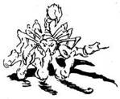
2.
Tetszik neki a történeted. Nagy nehezen feltápászkodik, és odamegy egy kis asztalhoz, amelyen földgömb áll. Amikor megpörgeti a földgömböt, az kinyílik, és egy halom aranytallér tárul eléd. A Vasöklű elneveti magát, amikor látja tágra nyílt szemedet. „Eladod? - kérdi. - Adok érte száz aranytallért!” Ha elfogadod az ajánlatát, lapozz a 49-re. Ha elutasítod, lapozz a 173-ra.
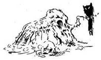
3.
Alig egy kilométerre a mocsár szélétől véletlenül belelépsz egy mély gödörbe. Trágya cuppog a lábad alatt. Képtelen vagy kimászni belőle. Leteszed a földre a kardodat, és egy indát kapsz el, melyen megpróbálsz felhúzódzkodni. Az inda azonban leszakad, és te jó mélyen visszapottyansz a trágyába. Csipogó hangot hallasz a hátad mögül. Felkapod a kardodat, de ekkor apró éles fogak vájnak a karodba… és ellepnek a patkányok. Képtelen vagy menekülni vagy harcolni. Rövidesen, miként azt a falusiak megjósolták, csupán a csontjaid fognak majd csillogni a fák között átszűrődő gyér napfényben. Kalandod itt véget ér! Legközelebb vigyél magaddal több varázseszközt!
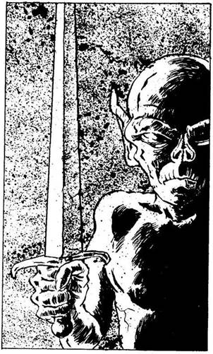
4.
A varázsló gonoszul felnevet: „Úgy látom, felesleges az erőmet rád pazarolnom! - mondja gúnyosan mosolyogva. - Viszont bebizonyíthatod, hogy milyen bátor vagy, ha kiállsz a szolgámmal!” Ezzel rámutat a fal egyik mélyedésében álló GOBLINSZOBORRA. A szobor, kőkardját magasba emelve, elindul feléd. Ha kiállsz ellene, lapozz a 284-re. Ha a Bakót támadod meg, lapozz a 123-ra.
5.
Tedd próbára a SZERENCSÉDET! Ha Szerencséd van, lapozz a 273-ra. Ha nincs Szerencséd, lapozz a 297-re.

6.
Visszamész Selator kunyhójába. Vidám tűz lobog a konyhában, és finom étel illata leng a levegőben. Selator szívélyesen üdvözöl, majd felteszi a kérdést: „Hoztál-e nekem bíborszínű bogyót?” Ha megszerezted az Antherica bokor bíborszínű bogyóját, lapozz a 175-re. Ha nem, lapozz az 52-re.
7.
A gonosz varázsló tekintete elsötétedik, és palástjának mintázata baljóslatúan kezd vibrálni. „Nos - szólal meg morogva -‚ ez több, mint a semmi! Add ide, amid van, én pedig 250 aranytallérral jutalmazlak!” Ha elfogadod az ajánlatát, lapozz a 266-ra. Ha emlékezteted, hogy sokkal többet ígért, lapozz a 207-re.
8.
„Nos, ez így nem jó! - közli. - Valaki mást kell keresnem helyetted. Ha maradt még nálad néhány a varázsgolyóimból, adok értük egy kevés gyógyitalt.” Mit teszel?
Eladod maradék varázsgolyódat némi
gyógyitalért? Lapozz a 141-re.
Közlöd, hogy mind elhasználtad? Lapozz a 316-ra.
Megtámadod a Vasöklűt? Lapozz a 341-re.

9.
A Skorpiók Mocsarának déli szélénél állsz. Hála a Rézgyűrűnek, mindig tudni fogod, merre van észak… de ettől függetlenül térképet kell rajzolnod! Elhatározod, hogy bejegyzed azokat az ösvényeket, amelyeken végigmész, illetve azokat a kis tisztásokat, melyekre eljutsz, hogy tudd, merre menj, ha ismét visszatérsz egy adott tisztásra.
Csakhamar rátalálsz egy olyan ösvényre, mely észak felé vezet be a mocsárba. Egy sziklatömb oldalán a következő nagybetűs feliratot látod: „ÁLLJ! SKORPIÓK MOCSARA! FORDULJ VISSZA!” Egy koponya meg két keresztbe rakott lábszárcsont egészíti ki a lehangoló képet. A figyelmeztetéssel mit sem törődve belépsz a mocsár területére. Úgy döntesz, hogy butaság lenne letérni az ösvényről a sárba, úgyhogy az úton maradsz. Lapozz a 195-re.

10.
Az összenőtt, göcsörtös fák szétnyúlnak előtted, és újabb tisztáshoz érsz. Az 5-ös Tisztáson vagy. Ha már jártál itt korábban, lapozz a 142-re. Ha nem, olvass tovább! Azonnal észreveszed, hogy csata színterére értél. A föld felszaggatva, a mocsár nedves füvén mindenütt vérnyomok, és nem messze tőled két nyílvessző áll ki egy fából. Ha meg akarod vizsgálni, mi van még a tisztáson, lapozz az 59-re. Ha úgy döntesz, hogy amilyen gyorsan csak tudsz, elhagyod a tisztást, lapozz a 227-re.
11.
Amint nyugat felé haladsz a mocsár egyre félelmetesebb lesz. Már éppen úgy érzed, hogy nem bírod tovább, amikor az ösvény szélesedni kezd, és egy hosszú, keskeny tisztáson találód magad. A 6-os Tisztáson vagy. Ha már jártál itt korábban, lapozz a 210-re. Ha még nem voltál itt, olvass tovább! Körülnézel, de egyetlenegy kivezető ösvényt sem látsz. Úgy tűnik, zsákutcába jutottál! Odamész egy nagy, szürke sziklához, hogy néhány percre megpihenj. A szikla váratlanul megmozdul! Nem szürke szikla az, amit látsz, hanem dús ősz hajzat. Vörös szemek merednek rád, és a RONDA VADÁLLAT, egy hosszú karmú, hatlábú szörny elindul feléd! Mit teszel?
Megküzdesz vele? Lapozz a 176-ra.
Futva mented az életedet? Lapozz a 102-re.
Varázsolsz egyet? Lapozz a 374-re.
12.
Az Óriás hatalmasakat ordít harc közben. Rettenetesen erős, de szerencsédre nem túl fürge. Buzogánya csak ritkán talál el. De amikor lesújt, duplán számít. Vigyázz hát!
Óriás ÜGYESSÉG 9 ÉLETERŐ 12
Ha 6-ra csökkented az Óriás ÉLETERŐ pontjainak a számát, lapozz a 61-re.
Ha akarsz, elmenekülhetsz, de ne feledd, az Óriás csapásai duplán számítanak! Ha Menekülni próbálsz, 4 ÉLETERŐ pontot vesztesz. Ha élve Menekülsz meg, lapozz a 161-re.
13.
„Harcos vagyok, akinek határozott küldetése van!” - feleled neki. Ujjadon a Gyűrű nem jelzi, hogy gonosz emberrel lenne dolgod, így hát biztonságban érzed magad a Békák Mesterének a társaságában. Kit szolgálsz?
Selatort? Lapozz a 212-re.
Bakót? Lapozz a 287-re.
Vasöklűt? Lapozz a 376-ra.

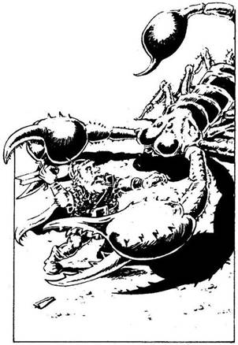
14.
Az ösvény kicsiny tisztáshoz vezet, ahol évekkel ezelőtt kidőlt egy nagy fa, és vele együtt még jó néhány másik is. A 32-es Tisztáson vagy! Ha jártál már itt korábban, lapozz a 338-ra. Ha még nem jártál itt, olvass tovább! Ahogy egyre beljebb mész, csata zajára leszel figyelmes. Amint kilépsz egy fa mögül, egy ÓRIÁSSKORPIÓT pillantasz meg, amint egy bőrruhás Törpével harcol. A Törpe nagy bajban van. Látod, hogy a Skorpió egyik ollójával nyakon ragadja és a földhöz vágja, hogy csak úgy nyekken. Nem hiszed, hogy van olyan varázslatod, amellyel érdemes lenne szembeszállnod ezzel az ellenséggel. Ha elhagyod a tisztást, míg a szörny lakmározik, lapozz a 88-ra. Ha megtámadod az Óriásskorpiót, lapozz a 312-re.
15.
Mivel vesztegetnéd meg?
Az Arany Mágnessel? Lapozz a 63-ra.
Egy másik Mestertől származó
Amulettel? Lapozz a 198-ra.
A hatalmas Ibolyaszínű
Drágakővel? Lapozz a 276-ra.
Egyikkel sem? Lapozz a 212-re,
és válassz újra!
16.
A hangodban valami elárul. Keze megmozdul - kétkedően néz rád. Lehet, hogy a gondolatodban olvas? Lapozz a 198-ra.
17.
Ez az ember gonosz, tehát semmit sem akarsz tőle. Elmész mellette a kijárat felé. Miközben távozol a tisztásról, hirtelen hurok szorul a nyakadra. Hiába minden erőfeszítésed, a Tolvaj szinte megfojt a hurokkal, és eszméletlenül rogysz a földre. 3 ÉLETERŐ pontot vesztesz. Mikor magadhoz térsz, iszonyúan rosszul érzed magad. Az összes varázsgolyód és a többi varázsszered is eltűnt, a Tolvajnak viszont nyoma veszett! Lapozz a 179-re.
18.
Amikor látják, hogy kivont karddal rájuk rontasz, megrettennek. Mind az öt Útonálló berohan a tisztás szélén lévő erdőbe. Egy pillanatra se állsz meg. Kiabálva keresztülszáguldasz a tisztáson, majd az ösvényen át eljutsz a tisztás másik végébe. Az Útonállók nagyon megdöbbennek, így képtelenek arra gondolni, hogy üldözőbe vegyenek. Lapozz a 19-re.
19.
Két ösvényen mehetsz tovább a tisztásról. Az észak felé vezető sokkal szélesebb, láthatóan sokan jártak már ezen az úton. Merre mész?
Északnak? Lapozz a 280-ra.
Délnek? Lapozz a 137-re.

20.
A bogyó nagyon finom. Kifejezetten kellemesen érzed magad utána. Nyersz 2 ÉLETERŐ pontot és 1 SZERENCSE pontot. Más figyelemre méltó dolgot itt nem találsz, így továbbmész. Lapozz a 342-re.
21.
Pihensz néhány percet. Nyersz 1 ÉLETERŐ pontot. Ekkor morgást hallasz a fa odvából. Ha meg akarod nézni, ki vagy mi van benne, lapozz az 55-re. Ha nem vagy kíváncsi rá, lapozz a 390-re.
22.
Habár a magokat zsebre vágtad, mégis azt veszed észre, hogy a levágott karok tövéből új karok kezdenek el kinőni. Gyorsan elhagyod a tisztást. Merre mész?
Északnak? Lapozz a 320-ra.
Délnek? Lapozz a 90-re.
Nyugatnak? Lapozz a 11-re.
23.
A Rézgyűrű hideg marad; tudod, hogy a Madarak Mesternője jó varázsló. Elmondod neki, mi járatban vagy, és kéred, hogy segítsen. „Ez a kereskedő nagyon ostoba - mondja. - Még ha megkapja is a mocsár térképét, néhány varázsló testvérem igen gonosz, így elképzelhető, hogy megpróbálják majd kifosztani a karavánját. De te bátor vagy, és segítek neked, hogy elkerülhesd küldetésed legnehezebb részeit.” Lapozz a 248-ra.
24.
A Lidércfény előtted táncol, s követni kezded. A talaj a lábad alatt egyre nedvesebbé válik. Hirtelen bezuhansz egy sárgödörbe! A Lidércfény váratlanul eltűnik. Csak addig él, amíg sikerül elcsalnia az elővigyázatlan utazókat. Tedd próbára a SZERENCSÉDET! Ha SZERENCSÉD van, sértetlenül mászol ki a sárgödörből. Ha nincs SZERENCSÉD, vesztesz 2 ÉLETERŐ pontot erőfeszítéseid során, de végül is szilárd talajon állsz. Ha nem lenne az ujjadon a Rézgyűrű, már rég elvesztél volna! Így viszont tudod, merre indulj, hogy a tisztást megtaláld. Lapozz a 249-re.
25.
A Sas hangosan vijjogva tesz egy kört a tisztás fölött, majd visszaszáll a fészkére. Boldog vagy, hogy nyugodtan eltávozhatsz! Lapozz a 202-re.
26.
Érzed, hogy a Pókok Mestere a velejéig gonosz, és kardoddal rátámadsz. Ő egy csillogó pálcával csap vissza. Észreveszed, hogy a pálca vége tűhegyes és valamilyen undorító zöld masszával van bekenve. Ahányszor megérint vele, annyiszor 1 pontot vesztesz az ÉLETERŐDBŐL.
Pókok Mestere ÜGYESSÉG 9 ÉLETERŐ 6
Ha megölöd, lapozz a 354-re.
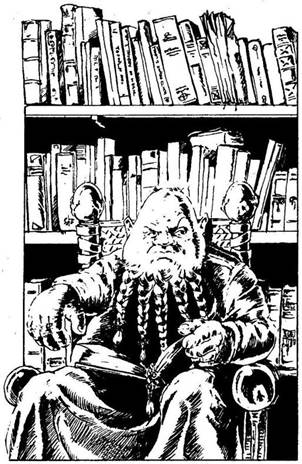
27.
Gronar azt ajánlja neked, hogy menj és keresd meg Vasöklűt a piactéren. Amint beérsz az utcák és üzletek sűrűjébe, eltévedsz. Többször kérsz útbaigazítást, amikor végül egy nevetgélő fiúcsapat elkísér a piactér szélén álló nagy házhoz. Bekopogsz - és egy Goblin válaszol! De nem egy olyan Goblin-varázsló, akik ellen harcoltál, hanem egy Goblin-szolgálólány. Bevezet a könyvtárszobába, ahol Vasöklűt látod, amint a székén ül. Ez az egyik legfurcsább ember, akit valaha láttál… Nagyon magas és iszonyúan kövér, a-szakállát gondosan copfokba fonta, az arca pirospozsgás. Elmondod, mi járatban vagy, és megkérdezed, nincs-e szüksége rád. „De van! - mennydörgi. - De miből gondolod, hogy túléled a Skorpiók Mocsarát, ahol annyian meghaltak már?” Ha elmondod neki találkozásodat az öregasszonnyal és azt is, hogy milyen ereje van az ujjadon lévő Rézgyűrűnek, lapozz a 2-re. Ha egyszerűen csak elmosolyodsz és közlöd, hogy kipróbált harcos vagy, lapozz a 173-ra.
28.
Sok Kardfa vesz körül, de te úgy harcolj ellenük, mintha egyetlenegy ellenséggel küzdenél. Szerencsédre ezek a fák nem látnak téged - csupán a hang irányában támadnak. Mindenesetre jó sok fa van körülötted, és mindegyik több karddal verekszik.
Kardfák ÜGYESSÉG 9 ÉLETERŐ 12
Ha legyőzöd őket, lapozz a 362-re. Ha nem, úgy a fák martaléka leszel…
29.
Jól tudod, butaság lenne megmondani neki, hogy egy Gonosz varázsló szolgálatában állsz, ezért így szólsz: „A Jót szolgálom, most azonban csak szeretnék kijutni ebből a mocsárból. Az egyik varázsló Mestert keresem.” Tedd próbára a SZERENCSÉDET! Ha SZERENCSÉD van, lapozz a 185-re. Ha nincs SZERENCSÉD, lapozz a 378-ra.

30.
Jókora a távolság, ezért olyan óvatosan ugrasz le, ahogy csak tudsz. Előbb ledobod a csizmádat és a hátizsákodat, aztán fejest ugrasz a vízbe! Rémülten tapasztalod, hogy a víz sekély és a folyó feneke iszapos. Beleragadsz! Miután nagy nehezen kiszabadítod magad az iszap fogságából és a víz felszínére vergődsz, egy Krokodil nyitott szájjal vár, hogy bekapjon. Megmarkolod a kardodat, de késő… a Krokodil nyitott szája életed utolsó látványa. Kalandod véget ért.
31.
Menet közben látod, hogy messze keletre vagy attól a ponttól, ahol a mocsárba beléptél. Azon töröd a fejed, vajon jó úton jöttél-e. Hirtelen füves tisztáshoz érsz. A 21-es Tisztáson vagy! Ha már jártál itt korábban, lapozz a 364-re. Ha nem, olvass tovább! A tisztás közepén kristálytiszta vizű tó van, egyik partja csábító homokpart. Kivezető ösvényt nem látsz. Mit teszel?
Visszamész nyugat felé? Lapozz a 47-re.
Körülnézel, nem leselkedik-e rád valamilyen
veszély? Lapozz a 394-re.
Iszol a tó vizéből? Lapozz a 77-re.
32.
Végigsuhintasz a kardoddal a virágokon, de több van belőlük, mint amennyit el tudsz pusztítani. Iszonyatosan kifáradsz. Vesztesz 2 ÉLETERŐ és 1 ÜGYESSÉG pontot. Ha feladod és elfutsz, lapozz a 269-re. Ha varázsolsz egyet, lapozz a 80-ra.
33.
Rohansz a tisztáson át, hogy megelőzd a Rákfű újabb támadását. A fű azonban most talán még gyorsabban nő előtted, és elzárja az utadat. A zöld fogók éhesen csattognak feléd. Ha kardoddal végigvágsz rajtuk, lapozz a 134-re. Ha varázsolsz egyet, lapozz a 167-re.

34.
Mit varázsolsz a Víziszörny ellen?
Hervasztást? Lapozz a 237-re.
Tüzet? Lapozz a 291-re.
Félelmet? Lapozz a 356-ra.
Egyiket sem? Lapozz a 209-re,
és válassz ismét.
35.
A másik két nyílvesszővel is rosszul céloztak, de irányt változtatva mindkettő a hátizsákodba fúródik! Csupán az egyik hatol át rajta és sérti fel kissé a bőrödet. 1 ÉLETERŐ pontot vesztesz. Rájössz, hogy az Arany Mágnes Amuletted egy gonosz varázslat folytán vonzza a nyílvesszőket… még szerencse, hogy a hátizsákodba tetted, ahelyett hogy a nyakadba akasztottad volna! Mit teszel?
Rájuk támadsz a kardoddal? Lapozz a 281-re.
Valamilyen varázslatot
alkalmazol? Lapozz a 399-re.
Az életedet mentve elrohansz? Lapozz a 309-re.

36.
A Kertek Mesterének előadod küldetésed célját. Ha már megtaláltad az Antherica bokrot, lapozz a 283-ra. Ha még nem találtad meg, lapozz a 396-ra.
37.
Ha megmondod neki, mi küldetésed célja, lapozz a 292-re. Ha inkább egy kitalált történettel állsz elő és rövid ideig elcsevegsz vele, lapozz a 220-ra.
38.
A Nyálka halott; szétfolyva oszlásnak indul, közben iszonyatos szagot áraszt. Lapozz a 153-ra.
39.
A Barátság varázslatot alkalmazod az Egyszarvúval szemben. Óvatosan szemlél - nem nagyon bízik az emberekben. A varázslatnak azonban mégiscsak van hatása, ugyanis az Egyszarvú hirtelen lehajtja a fejét, és a füvet kezdi harapdálni. Lapozz a 348-ra.
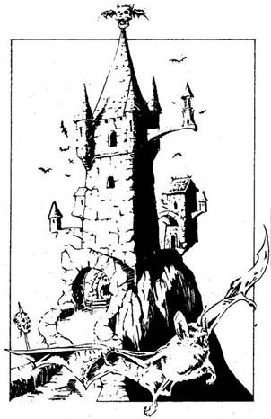
40.
Legyőzöd félelmedet, és elindulsz a vár felé. Tornyai körül denevérek röpködnek. Amikor odaérsz a hatalmas vasajtóhoz, látod, hogy azon egy ronda szoborarc díszeleg. Az ajtó kinyílik előtted! A Bakó már vár rád! Magas, vékony, akár egy csontváz. Fekete palástjának bíborszínű mintája szinte izzik. Szívélyesen üdvözöl, de ujjadon a gyűrű meleg, és arra int, hogy gonosz emberrel van dolgod. „Mindent tudok rólad - mondja. - A mocsarat szeretnéd átkutatni. Az a minden lében kanál Gronar küldött ide. De miből gondolod, hogy érdemes vagy arra, hogy rád pazaroljam drága időmet? Nekem olyan hősre van szükségem, aki nem fél semmitől!” Mit teszel?
Kihívod párbajra? Lapozz a 4-re.
Elmondod neki, hogy te rettenthetetlen
varázsló vagy, akit varázsgyűrűje megvéd
attól, hogy eltévedjen? Lapozz az 50-re.
Elmosolyodsz, és csak annyit mondasz,
hogy nem félsz semmitől? Lapozz a 97-re.

41.
Egy tisztáshoz érsz, melyet borostyánnal benőtt fák szegélyeznek. A 30-as Tisztáson vagy! Ha már jártál itt korábban, lapozz a 382-re. Ha még nem, olvass tovább! Úgy látod, nincs itt semmi figyelemre méltó, így aztán továbbmész a másik kivezető ösvény felé, amikor rádöbbensz, hogy futóhomok van a lábad alatt! Tedd próbára a SZERENCSÉDET! Ha SZERENCSÉD van, vesztesz 2 ÉLETERŐ pontot, és lapozz a 270-re. Ha nincs SZERENCSÉD, lapozz a 87-re.

42.
Átnézed a szerencsétlenül járt Törpe holmiját, hogy van-e közte valami használható a számodra. Bőrruhája természetesen túl kicsi rád, de erszényében találsz egy kis, folyadékkal teli fiolát. Ha megiszod, lapozz a 253-ra. Ha otthagyod, lapozz a 88-ra.
43.
Tedd próbára a SZERENCSÉDET! Ha SZERENCSÉD van, lapozz a 339-re. Ha nincs SZERENCSÉD, lapozz a 313-ra.
44.
Nem támad meg senki, miközben átmész a túlsó partra, de amikor átérsz, undorral veszed észre, hogy egy csomó nagy Pióca tapad a lábadhoz és szívja a véredet! Dobj két kockával, és annyi ÉLETERŐ pontot vesztesz, amennyit a két kocka közül az alacsonyabb pontot mutató kockán látsz. Mehetsz innen északra is, délre is. Ha északnak mész, lapozz a 157-re. Ha dél felé fordulsz, lapozz a 398-ra.
45.
Mindentől óvakodsz, ami túl egyszerűnek látszik. Lehet, hogy a híd csapda, vagy valami ahhoz hasonló! Megfordulsz, és elindulsz ugyanazon az úton, amelyiken idejöttél. Ha északról jöttél, lapozz a 331-re. Ha délről érkeztél, lapozz a 303-ra.
46.
Semmi egyebet nem tudsz itt csinálni, hacsak azt nem, hogy bemész a konyhába, de látod, hogy az valamilyen varázslatos módon zárva van - és képtelen vagy kinyitni. Úgy döntesz, hogy továbbmész. Lapozz a 314-re.
47.
Egy kicsiny, buja növényzettel benőtt tisztáshoz érsz. A 3-as Tisztáson vagy. Körülnézel, de nem látsz semmit. Három út van előtted. Merre mész?
Délnek? Lapozz a 290-re.
Keletnek? Lapozz a 31-re.
Nyugatnak? Lapozz a 118-ra.
48.
Megmarkolod a kardodat, és harcra szólítod fel őket. Nem ijednek meg tőled, még csak nem is csodálkoznak rajtad; csupán csak kinevetnek. „Mi nem vagyunk harcos népség, egyszerű falusi emberek vagyunk! - mondják. - De az olyan fickó, mint te, aki a kardját mindig készenlétben tartja, valóban azok közé a bajkeresők közé való, akik ott vannak a nagy mocsárban. Nem marasztalunk tovább!” Zavartan állsz. Vesztesz 1 SZERENCSE pontot, amiért ilyen támadóan viselkedtél ezekkel a békés emberekkel szemben! Lapozz a 95-re.
49.
Rézgyűrűdet mohó mozdulattal lehúzod az ujjadról, és az asztalra dobod. Száz aranytallért számol le egy bőrzacskóba, és átadja neked. Elég pénzed van, hogy több évig is kényelmesen élj, vagy hogy egy jó hónapig dőzsölj… de ezt a varázsgyűrűdért kaptad. Tudod, hogy e gyűrű védelme nélkül nem merészkedhetsz a Skorpiók Mocsarába. Kalandod itt véget ér!

50.
Nagy érdeklődéssel hallgatja elbeszélésedet. - Azt mondod, „varázsgyűrű”? - kérdi. Bólintasz, és felmutatod a kezedet, melyen ott ragyog a Rézgyűrű. Szemét összehúzva hátralép, és egyik karját furcsán a magasba emeli. Az a gyanúd, hogy varázsol. Mit teszel?
Odaugrasz és megtámadod? Lapozz a 373-ra.
Megvárod, mit csinál? Lapozz a 222-re.
Megfordulsz és elfutsz? Lapozz a 315-re.


51.
Egy gödör tátong előtted, de te átugrod. Amilyen gyorsan csak tudsz, végigrohansz a bejárati folyosón, ledöntve egy másik Szobrot, mely kinyúl érted. Egy rúgással kinyitod az ajtót. A ronda arc üvölt rajta, és beléd akar harapni, de te gyorsabb vagy. Ha a mocsár felé rohansz, lapozz a 296-ra. Ha a falu felé futsz, lapozz az 5-re.
52.
Szomorú, de egyetlenegy bogyót sem tudsz adni neki. Elmondod, mi történt veled a mocsárban: Selator arca elkomorodik. „Biztosan megtetted, amit megtehettél” - mondja. Minthogy látod, hogy igencsak le van törve, felajánlod neki, hogy visszamész, és ismét megpróbálod, de nem figyel rád. „A veszély túl nagy!” - mondja. Mindent megtettél, amit tudtál, de ez kevés volt. Kalandod itt véget ér.
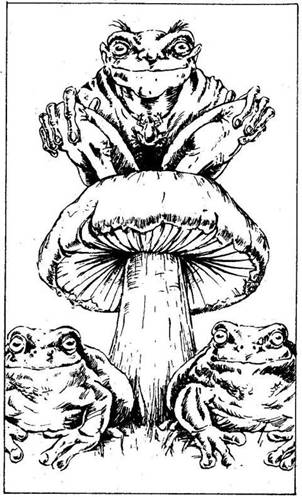
53.
A déli ösvényen haladva egyszer csak hangos békakuruttyolást hallasz… kicsikét, nagyokét és százféle egyéb méretűét. Az ösvény egy kis tóhoz vezet. A 8-as Tisztáson vagy. Ha már jártál itt korábban, lapozz a 329-re. Ha még nem, olvass tovább! Először a rengeteg hatalmas gombát pillantod meg. Az egyik tetején egy férfi ül. Alacsony, de izmos; szúrós fekete szeme és nagy, széles szája van. Nyakában egy békát ábrázoló ezüst Amulett lóg, és a földön mindkét oldalról egy-egy kecskebéka őrzi. „A BÉKÁK MESTERE vagyok - mondja üdvözlésképpen. - Mi járatban vagy az én birodalmamban?” Ha te is üdvözlöd, lapozz a 13-ra. Ha megtámadod, lapozz a 62-re.

54.
Dühében eltorzul az arca, és üvöltözni kezd: „Hogy merészelsz üres kézzel visszajönni?” Tedd próbára a SZERENCSÉDET! Ha SZERENCSÉD van, lapozz a 109-re. Ha nincs SZERENCSÉD, lapozz a 285-re.
55.
Óvatosan a fához lépsz. Még mielőtt elérnéd, megcsapja az orrodat az undorító szag, amiből arra következtetsz, hogy valamilyen vadállat búvóhelye lehet itt. Hátrahőkölsz, amikor egy óriási MEDVE bozontos feje jelenik meg az odú nyílásában. Ha elfutsz, lapozz a 390-re. Ha megverekszel a Medvével, lapozz a 200-ra.

56.
Keresztülvágsz a mezőn, és a kanyargós ösvényeken át a falu piactere felé tartasz. Itt áll Vasöklű háza, most is éppolyan, mint amikor utoljára itt jártál. Bekopogsz, és a Goblin-lány nyit ajtót. Elvezet Vasöklű dolgozószobájába. Ott ü selyempalástjába burkolva. „Nos, hogy sikerült a dolog? Elhoztad a térképet a Fűzfaligetbe Vezető utakról?” - kérdi dörgő hangon. Ha utad során jártál Fűzfaligetben, lapozz a 158-ra. Ha nem jutottál el Fűzfaligetbe, lapozz a 8-ra.

57.
Egyik varázslat sem igazán jó ebben a helyzetben. Előrántod a kardodat, és rátámadsz a gonosz varázslóra. Lapozz a 124-re.

58.
Tedd próbára a SZERENCSÉD! Ha SZERENCSÉD van, menj az általad választott kivezető útra. Ha nincs SZERENCSÉD, sikerül ugyan, amit akartál, de csak úgy, hogy végigmész a kiálló gyökereken, és lábadat jól beleütöd egy sziklába - ezért vonj le magadtól 1 ÉLETERŐ pontot. Most elhagyhatod a szigetet. Merre indulsz?
Nyugatra? Lapozz a 398-ra.
Keletre? Lapozz a 105-re.
Délre? Lapozz a 208-ra.

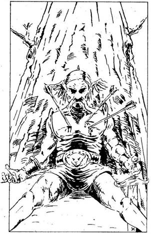
59.
Elhatározod, hogy körülnézel a Tisztáson. Tán akad itt valaki, akinek szüksége van a segítségedre, vagy valami, ami neked lehet a segítségedre. Szinte azonnal belebotlasz egy Mocsári Ork testébe. Gyorsan átvizsgálod undorító tetemét, de semmi értékeset nem találsz. Ekkor egy sebesült férfit pillantasz meg egy fa törzsének dőlve. Odasietsz hozzá, hogy segíts, de amint megérinted, látod, hogy halott: három nyílvessző áll ki mellkasából. Két másik Ork fekszik a lábánál: ők is drágán fizettek! Nem látsz körülöttük semmiféle csomagot vagy fegyvert; az Orkok, akik élve elmenekültek, biztosan kiürítették a terepet. Elhatározod, hogy a halott Orkot a magad módján eltemeted. Eközben észreveszed, hogy a nyakában egy Mágnes alakú kis arany nyakék lóg. Ha akarod, magadhoz veheted, ha nem, hagyd ott, de lapozz a 227-re.
60.
Illúzió-varázslatot alkalmazol. Gyors elhatározással a Ronda Vadállat elé varázsolsz egy gyámoltalan falusi embert, aki az erdőbe megy fáért. A vérszomjas állat a könnyebb préda után veti magát, de ekkor eltünteted az öregembert. Amíg a Vadállat figyelmét ily módon eltereled, óvatosan visszasurransz arra az útra, melyen idejöttél. Lapozz a 279-re.
61.
„Ez nem tisztességes! - kiált fel az Óriás mérgesen. - Először loptok tőlem, ti kis emberek, aztán idejöttök és rám támadtok! Soha nem bántottam senkit!” Ha hiszel neki, lapozz a 229-re. Ha tovább folytatod ellene a harcot, egészen a halálig, megteheted. Ha megölöd az Óriást, lapozz a 366-ra.
62.
Kivont karddal rontasz rá. Szeme kidülled, úgy meglepődik, és azonnal leugrik a gomba tetejéről. Ugrásával jó pár méter távolságra kerül tőled. Ekkor int, és két Béka-segédje máris neked ront. Ha visszarohansz azon az úton, amelyen jöttél, lapozz a 323-ra. Ha megküzdesz a Békákkal, lapozz a 146-ra.
63.
Benyúlsz a hátizsákodba, és felajánlod neki azt az Arany Mágnest, amit egy halott harcostól zsákmányoltál. Felnevet. „Ne haragudj, de ez nem kell nekem! Átok van rajta! Miért nem dobod bele egyszerűen a tóba?” - mondja. Elég fura a helyzet, így megteszed. Ha van még valamilyen más tárgy a birtokodban, amit felajánlhatnál neki, lapozz a 15-re. Ha nincs más, amit felkínálhatnál, lapozz a 212-re, és válassz más taktikát.

64.
A Tűz-varázslatot alkalmazod a Farkasok ellen, abban a reményben, hogy így elűzöd őket. A varázslat működik! A hozzád legközelebb álló Farkas bundája tüzet fog, és mindkettő pánikszerűen elrohan. A Farkasok Mestere azonban nem ijed meg a varázslattól. „Úgy! - morogja feléd. - A harcos úr varázslatokkal játszadozik, mi? Na nézzük, ez hogy tetszik neked?!” Megrázza feléd az öklét, és hirtelen úgy érzed, mintha hatalmas csapás érné kardforgató karodat. Vesztesz 3 ÜGYESSÉG és 1 ÉLETERŐ pontot. Már látod, hogyha varázslatpárbajra kerül köztetek sor, te csak a rövidebbet húzhatod… így hát előrántod kardodat, és támadsz!
Farkasok Mestere ÜGYESSÉG 11 ÉLETERŐ 10
Ha vesztésre állsz, Elmenekülhetsz - lapozz a 314-re. Ha megölöd a Farkasok Mesterét, lapozz a 154-re.
65.
Az ösvény tekervényes, de megpróbálod pontosan követni. Megkerülöd a hatalmas kagylógombát, melyen aprócska teremtmények lakmároznak, és újabb Tisztáshoz érsz. A 10-es Tisztáson vagy! Ha már jártál itt korábban, lapozz a 343-ra. Ha még nem jártál itt, olvass tovább! Hangokat hallasz magad előtt. Óvatosan kinézel a fa mögül. Öt férfit látsz, akikről ruházatuk és durva beszédjük alapján úgy gondolod, nem lehetnek mások, mint ÚTONÁLLÓK. Rézgyűrűd hideg marad, ebből tudod, hogy ezek az emberek valójában nem gonoszak. Másfelől azonban jó, ha vigyázol velük. Mit teszel?
Megfordulsz, és visszamész arra,
amerre jöttél? Lapozz a 137-re.
Nagyot kiáltva előrántod a kardodat és
rájuk támadsz? Lapozz a 231-re.
Varázsolsz egyet a
rejtekhelyedről? Lapozz a 387-re.
Bátran előjössz, és üdvözlöd
őket? Lapozz a 163-ra.
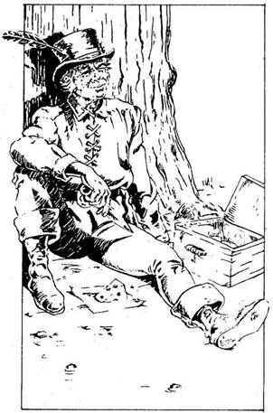
66.
Egy viszonylag kellemes tisztásra érsz, melyet öreg, göcsörtös tölgyfák öveznek. A 9-es Tisztáson vagy! Ha már jártál itt korábban, lapozz a 192-re. Ha nem, olvass tovább! Egy fa törzséhez támaszkodva apró termetű, vidám ember ül fekete ruhában, és éppen az ebédjét fogyasztja. Étele egy kosárban van mellette. Fegyvert nem látsz körülötte, kivéve egy kést, mellyel a sajtot vágja. Észrevesz, és így kiált: „Jó napot, harcos! Megosztod velem az ételt?” Amint megszólal, érzed, hogy a Rézgyűrű melegedni kezd, és ez arra figyelmeztet, hogy rossz emberrel állsz szemben. Rájössz, hogy a férfi TOLVAJ. Mit teszel?
Megtámadod? Lapozz a 267-re.
Nem veszel róla tudomást? Lapozz a 17-re.
Elfogadod a meghívását, és mellé
telepszel? Lapozz a 147-re.
67.
Nagyon valószínű, hogy ez valamilyen gyógykeverék. Mind elhasználod, és érzed: erőd visszatér. Nyersz 2 ÉLETERŐ pontot. Lapozz a 19-re.
68.
Ha tudod a titkos szót, amit a Farkasok Mestere tanított neked, lapozz a 302-re. Ha nem tudod, lapozz a 215-re.
69.
Legyőzted a Medvét. Átkutatod az odúját, de nem találsz semmi értékeset. Lapozz a 390-re.
70.
Gyorsan cselekszel. Van időd, hogy eldöntsd, mit csinálj a Skorpiókkal. Mit teszel?
Rájuk taposol, és kardoddal támadsz
ellenük? Lapozz a 216-ra.
Tüzet varázsolsz? Lapozz a 110-re.
Átugrasz rajtuk és továbbmész? Lapozz a 377-re.
71.
Attól való félelmedben, hogy a zajongó madár hangjára majd felfigyelnek, előrántod a kardodat, és lecsapod a Papagáj fejét. Elnémulva zuhan a földre. Kihúzol néhány élénk színű tollat a farkából. Óvatosan továbbmész. Lapozz a 149-re.
72.
Lábad alatt egyre ragacsosabbá válik a föld, de mész tovább. A Lidércfény még mindig ott táncol előtted. Ha visszafordulsz, lapozz a 249-re. Ha továbbmész nyugat felé, lapozz a 24-re.
73.
Tedd próbára a SZERENCSÉDET! Ha nincs SZERENCSÉD, leesel a fáról, és 2 ÉLETERŐ pontot vesztesz, de visszamászol a fészekhez. Ha SZERENCSÉD van, biztonságosan feljutsz a fészekhez. Az egyik ágon átvetve egy Aranyláncot találsz. Magadhoz veheted, ha akarod. Lemászol a fáról, és továbbmész. Lapozz a 202-re.
74.
Úgy döntesz, hogy varázslatot alkalmazol a Pókok gonosz Mesterével szemben. Melyik varázslatot választod?
A Barátságot? Lapozz a 361-re.
Az Átkot? Lapozz a 261-re.
A Tüzet? Lapozz a 113-ra.
Egyiket sem? Lapozz a 144-re,
és válassz újra.
75.
A Tűz-varázslatot alkalmazod a Kardfákkal szemben. Dühükben vonaglanak, de nem sérülnek meg túlzottan. Lapozz a 28-ra, és harcolj tovább, de vonj le 2 pontot a Kardfák ÉLETERŐ pontjaiból, mielőtt a harcot elkezdenéd!

76.
Tudod, hogy a Csavargó a Jók oldalán áll, és jól ismeri a Mocsarat. Megbízhatsz benne, és elmondhatod neki, mi járatban vagy. Hallott Selatorról, és szívesen segít. Felajánl neked némi gyógyfüvet, mely kitisztítja a fejedet, és 1 ÜGYESSÉG ponttal növelheted általa pontjaid számát. Ha már megtaláltad az Antherica bokrot, lapozz a 166-ra. Ha még nem, lapozz a 333-ra.
77.
Úgy érzed, mintha friss erő töltené el testedet. A tó vize gyógyító erejű. Nyersz 3 ÉLETERŐ pontot. Elhagyod a tisztást, és elindulsz vissza, nyugati irányba. Lapozz a 47-re.
78.
A Görbe Lándzsa igen kellemes, kényelmes fogadó. Egy aranytallért fizetsz a fogadósnak, és felmész a szobádba. Amint leteszed a fejedet a párnára, rögtön elnyom az álom. Másnap frissen ébredsz - nyersz 2 ÉLETERŐ pontot. Amikor már éppen távoznál, a fogadós köszönt. Tudja, hogy keresztülmentél a Skorpiók Mocsarán, és ugyanarra akarsz visszamenni. „Igazán jó harcos lehetsz, ha átmentél a mocsáron… - mondja - és talán nem tartozik rám a dolog… de tudnod kell, hogy van itt a szomszéd utcában egy varázsló, ő eladhat neked néhány varázslatot, ami segítségedre lehet a visszaúton a mocsáron át.” Megköszönve a fogadósnak a jó tanácsot megkérded, hogyan juthatsz el a varázslóhoz, majd távozol. Ha elmész a varázslóhoz, lapozz a 150-re. Ha a déli úton ismét elindulsz vissza a mocsárba, lapozz a 343-ra.


79.
Megegyeztek, hogy egy párbajjal, melyet csak az első vérig vívtok, tisztességesen eldönthetitek a kérdést. Az Útonállók Vezére feláll veled szemben. Férfiak sereglenek körétek, de nem látszanak árulóknak - inkább csak kíváncsiskodóknak.
Útonállók Vezére ÜGYESSÉG 9 ÉLETERŐ 10
Csak addig harcoltok, amíg egyikőtök megsebzi a másikat. Ha te sebzed meg előbb az Útonállók Vezérét, lapozz a 360-ra. Ha ő sebez meg téged előbb, lapozz a 128-ra.
80.
Mit varázsolsz a Félelem Virágai ellen?
Tüzet? Lapozz a 307-re.
Hervasztást? Lapozz a 196-ra.
Egyiket sem? Lapozz a 204-re,
és válassz újra.

81.
Kipusztítottad a Rákfüvet; ebben biztos vagy. Átvizsgálod a Tisztást. Egy fán a következő megperzselt feliratot látod: „Óvakodj az Orkoktól!” Ez minden. Továbbmész, lapozz a 187-re.
82.
A drágakő igen értékesnek látszik, ezért előrántod a kardodat, és rátámadsz a szörnyre. Gumiszerű karjaival sújt feléd.
Víziszörny ÜGYESSÉG 8 ÉLETERŐ 10
Ha Menekülni akarsz és visszarohanni nyugati irányba, lapozz a 330-ra. Ha megölöd a szörnyet, lapozz a 308-ra.
83.
Tedd próbára a SZERENCSÉDET! Ha SZERENCSÉD van, lapozz a 35-re. Ha nincs SZERENCSÉD, lapozz a 357-re.
84.
Miután megbizonyosodsz róla, hogy a Kertek Mestere jó barát, elmondod, mi járatban vagy. Sok sikert kíván neked, de igazából nem tud segíteni rajtad. Körbevezet a tisztásán, és látod, hogy az egyetlen kivezető út az, amelyen idejöttél. Elbúcsúzol a Kertek Mesterétől, és visszamész nyugat felé. Lapozz a 363-ra.
85.
Elfutsz. Vissza kell menned azon az úton, amelyen jöttél. Lapozz a 153-ra, és indulj el azon az úton, amelyen beléptél a tisztásra.
86.
Tedd próbára a SZERENCSÉDET! Ha SZERENCSÉD van, lapozz a 189-re. Ha nincs SZERENCSÉD, lapozz a 348-ra.
87.
Foglyul ejtett a Futóhomok. Érzed, amint lassan elnyel. Csupán az segít, ha páncélodat eldobod. Sietve kibújsz belőle és elhajítod. Most már könnyen ki tudsz szabadulni a Futóhomok csapdájából, de 2 ÜGYESSÉG pontot vesztesz, és 2 ponttal csökkented Kezdeti ÜGYESSÉG pontjaid számát, amiért elvesztetted a páncélodat. Lapozz a 270-re.
88.
Távozol a tisztásról. Ha északnak mész, lapozz a 121-re. Ha kelet felé tartasz, lapozz a 331-re.
89.
Jeget varázsolsz a folyó vizéből, hogy az így keletkezett hídon átmehess a túlsó partra. Sajnos a folyó nagyon széles és a vize meleg. Így a jéghíd gyenge! Ha mégis át akarsz menni rajta, lapozz a 325-re. Ha nem bízol a varázshídban, lapozz a 295-re és válassz újra.
90.
Számos sekély patakon átgázoltál, de most egy mélyebb folyó előtt állsz. A 34-es Tisztáson vagy. Észreveszed, hogy valami mozog a vízben, és nem igazán tudod eldönteni, átmenj-e a vízen. Mit teszel?
Jeget varázsolsz? Lapozz a 370-re.
A hervasztásos varázslatot
alkalmazod? Lapozz a 254-re.
Nagyon óvatosan átgázolsz
a folyón? Lapozz a 44-re.
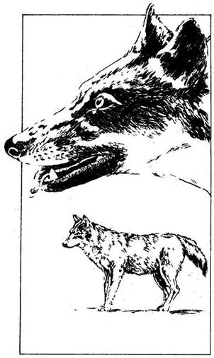
91.
Dobj két kockával! Ha az eredmény ugyanannyi vagy kevesebb, mint ÉLETERŐ pontjaidnak a száma, az ugrás sikerült. Ha nem, az ugrás nem sikerül: lábad beleragad a sárba, és kificamodik a karod, amikor földet érsz. Vonj le magadtól 1 ÜGYESSÉG pontot! Most már elhagyhatod a tisztást! Merre indulsz el?
Nyugat felé? Lapozz a 398-ra.
Kelet felé? Lapozz a 105-re.
Dél felé? Lapozz a 208-ra.
92.
Az ösvény észak felé vezet, és fokozatosan emelkedik. A föld mintha szilárdabbá válna a lábad alatt, a mocsári növényeket most sűrű erdő váltja fel, majd a fák ritkulni kezdenek, és egyszer csak széles tisztáshoz érsz, melyen alacsony bokrok nőnek. A 11-es Tisztáson vagy. Ha már jártál itt korábban, lapozz a 108-ra. Ha míg nem jártál itt, olvass tovább! Megállsz és hallgatózol, de körülötted néma csönd honol. Amikor körülnézel a tisztáson, hogy kivezető ösvényeket keress, hirtelen arra leszel figyelmes, hogy két hatalmas FARKAS bámul! Ha nálad van a FARKAS AMULETT, lapozz a 344-re. Ha nincs, lapozz a 68-ra.
93.
Megátkozod a Farkasok Mesterét. Az a torkához kap fájdalmában, de azért kirántja a kardját. Ekkor a Varázslat rajtad is fog. Dobj egy kockával, és annyi ÉLETERŐ pontot vesztesz, amennyit dobtál. Ha még életben vagy, meg kell küzdened a Farkasok Mesterével, de levonhatsz 2-2 pontot ÜGYESSÉG és ÉLETERŐ pontjainak a számából, ha harcolsz ellene. Lapozz a 120-ra.
94.
Az ösvény egyre mélyül, és kavargó köd vesz körül. Erős bűz terjeng, ezért visszatartod a lélegzetedet. De mielőtt kijuthatnál a ködfelhőből, újra levegőt kell venned. 2 ÉLETERŐ pontot vesztesz, amiért beszívtad a mocsár ködös bűzét. Ha észak felé mész tovább, lapozz a 295-re. Ha délnek mész, lapozz a 320-ra.
95.
A városka lakói rosszallóan ingatják ugyan a fejüket, amikor elindulsz az ajtó felé, de már nem tartóztatnak. Ám mielőtt elérnéd az ajtót, egyikük elállja az utadat. Alacsony, középkorú, fekete kecskeszakállas férfi áll előtted. Először farmernak nézed, de úgy látod, nagyobb érdeklődést mutat irántad, mint azt egy közönséges farmer tenné. Megfogja a karodat, és a kocsma egyik sarkában lévő asztalhoz vezet. A többiek tovább beszélgetnek, te pedig kíváncsian várod, milyen mondanivalója van számodra ennek a nyugodt férfinak. Bemutatkozik: „Gronarnak hívnak - mondja. - Ha valóban szembe akarsz szállni a mocsár uraival, valami komoly célt kell kitűznöd magad elé, nem elegendő az, hogy vaktában feltérképezd a mocsarat, vagy hogy megküzdj az ott élő fenevadakkal.” Ha igazat adsz neki, lapozz a 240-re. Ha nem, lapozz a 122-re.

96.
Valamilyen oknál fogva nem vagy képes a titkodat elhallgatni ez előtt a jó ember előtt. Azon kapod magad, hogy a Rézgyűrűdről mesélsz neki, és annak varázserejéről. Lapozz a 371-re.
97.
„Rendben van!” - válaszol mosolyogva, s kivillantja tűhegyes fogait. Karjával a fal felé int, ahol a GOBLINSZOBOR áll. A szobor megremeg, és kőkardját lengetve elindul feléd. Ha el akarsz futni előle, lapozz a 315-re. Ha inkább megküzdesz a szoborral, lapozz a 284-re.

98.
Tompa, erős ütést érzel a fejeden. Összeesel a varázsló lába előtt, és kiejted a kezedből a kardodat. Feltekintve úgy látod, mintha hatalmasra nőtt volna. Pedig az igazság az, hogy te zsugorodtál össze hangyaméretűvé! Hanyatt-homlok menekülsz. Kacagva néz utánad. Felmászol a falon, és megbújsz egy repedésben, Bakó pedig megy a dolgára. Hirtelen megéhezel. Kigombolyítasz egy pókhálót abban a reményben, hogy ízletes legyet találsz benne. Máris elfelejtetted előző életedet! Kalandod itt véget ér!
99.
Átadod Bakónak az Amuletteket, melyeket életed kockáztatásával szereztél a Skorpiók Mocsarában. Az gúnyos mosollyal veszi át őket. Kimegy a szobából, majd egy kicsi, de nehéz zsákkal tér vissza. Odadobja neked a csörgő pénzérmékkel teli erszényt. „Eredj innen, és ne merj visszajönni. Végeztem veled!” Lapozz a 242-re.
100.
Fáradtan, elcsigázottan távozol Vasöklűtől, és a fogadó felé veszed az utadat. Nem jártál sikerrel küldetésed során, de legalább élve megúsztad. Talán majd egyszer még visszatérsz ide. Most azonban kalandodnak itt vége szakad.
101.
A híd öreg, de jó karban van. Ha úgy döntesz, hogy észak felé veszed az utadat, lapozz a 350-re. Ha inkább délnek mész, lapozz a 118-ra.
102.
Bár egy fejhosszal a Ronda Vadállat előtt futsz, nemsokára hallod, hogy ott liheg a nyomodban. 1 ÉLETERŐ pontot vesztesz! Menj vissza a 11-es ponthoz, és válassz más taktikát.
103.
Elmondod, mi járatban vagy. Az Óriás bólint, majd így szól: „Jelenleg a Mocsár északi végénél vagyunk, de a Fűzfaliget nevű város innen sok kilométerre van nyugatra. Nyugat felé kell menned!” Megköszönöd neki a tanácsot, és továbbmész. Lapozz a 161-re.
104.
A Békák Mestere leugrik a gomba tetejéről, és a tóból egy marék vizet mer ki. Érdekes módon a víz nem folyik ki az ujjai közül, hanem megmarad a markában. Ekkor morzsolgatni kezdi a vizet, és az egy szempillantás alatt Kristálygömbbé változik. Belenéz, és az orra alatt mormol valamit. Aztán a gömböt visszadobja a tóba. „A növény, amit keresel, északon van - mondja -‚ de nem egyszerű eljutni oda, sokféle veszéllyel kell számolnod. Óvakodj a többi Mester-testvéremtől, ugyanis nem mindegyik barátságos. És légy kedves az Óriáshoz!” Miután mindezt közölte veled, felpattan, és eltűnik a fák sűrűjében. A tisztás kiürül. Lapozz a 352-re.
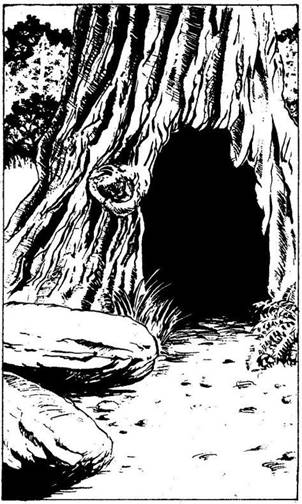
105.
Egy tisztás van előtted. Itt a talaj szilárdnak látszik, nem úgy, mint az előző tisztáson. A 12-es Tisztáson vagy! Ha már jártál itt korábban, lapozz a 330-ra. Ha nem, olvass tovább! Számos lapos kődarabot látsz, egy nagy, odvas fát és két másik ösvényt, amely elvezet a tisztásról. Mit teszel?
Leülsz, és megpihensz az egyik
kövön? Lapozz a 21-re.
Megnézed, mit rejt a fa odva? Lapozz az 55-re.
Azonnal elhagyod a tisztást? Lapozz a 390-re.
106.
Hátulról hurok szorul a nyakadra. A Tolvaj becsapott! Szerencsére te sokkal erősebb vagy nála. Meglazítod a hurkot, és áthúzod a fejeden. A hurokból való szabadulás 2 ÉLETERŐ pontodba kerül, de szabad vagy! Ha megtámadod a hitszegő Tolvajt, aki tőrt forgat a kezében, lapozz a 261-re. Ha inkább megfordulsz és elfutsz az egyik ösvényen, lapozz a 179-re.
107.
Az Átok-varázslatot alkalmazod a hozzád legközelebb álló Útonálló ellen. Felordít, majd összeesik. Társai odarohannak hozzá. Ekkor aztán ők is üvölteni kezdenek, és futva hagyják el a tisztást észak felé. Az Útonálló, aki összeesett - halott. Vonásai eltorzultak, úgy néz ki, mintha súlyos betegségben halt volna meg. Ekkor magadon is érezni kezded az Átok hatását. Dobj egy kockával! Annyit vonj le ÉLETERŐ pontjaidból, ahányat dobsz. Ha még életben vagy, továbbmehetsz. Lapozz a 19-re.
108.
Ismét azon a tisztáson vagy, ahol a Farkasokkal találkoztál. Nyugalom van mindenütt, nem látsz semmi különöset. A bokor változatlanul ott áll a tisztás közepén; most azonban nincsen rajta egyetlenegy bogyó sem. Nincs itt semmi különös. Elindulsz vissza, délnek, az Óriások tisztása felé. Lapozz a 342-re.
109.
Morog-dörög, de már látott harcolni, és most nem elég mérges ahhoz, hogy megtámadjon. Mit teszel?
Távozol azzal, amid van? Lapozz a 349-re.
Megtámadod? Lapozz a 124-re.
Varázsolsz egyet? Lapozz a 256-ra.

110.
Jól tudod, hogy a Tűz-varázslat az egyetlen varázslat, ami segíthet e rút csúszómászók tömege ellen. Máris varázsolsz. Tűz csap fel körülötted a fűből. Egy ideig terjed, majd kihuny, de a Skorpiók meghátrálásra kényszerültek. Elrohansz a tisztásról, mielőtt újra támadhatnának. Lapozz a 319-re.
111.
Nem akarod megölni a Madarak Mesternőjét, de ugyanakkor szeretnéd megszerezni, amit akarsz. A Barátság-varázslatot alkalmazod! A lány felnevet: „Te buta varázsló! - mondja. - Hát nem tudod, hogy a jó varázsló mindenki barátja?” Elpazaroltál egy varázslatot! Lapozz a 184-re.
112.
Kíváncsi vagy, mit rejt a nagy fészek. Ha fel akarsz mászni a fára, hogy megnézd, lapozz a 73-ra. Ha inkább továbbmész, lapozz a 202-re.
113.
Eszedbe jut, hogy a pókháló igen gyúlékony. A Tűz-varázslatot választod a Pókok Mesterével szemben. Köntöse hirtelen tüzet fog. A Pókok Mestere felordít, majd elterül a földön. A lángok beborítják az egész tisztást. A lángnyelvek felcsapnak a fákra, és elégetik az ott megbújó rút férgeket. A hőség olyan elviselhetetlen, hogy eszedben sincs körülnézni zsákmány után. Csak a menekülésre gondolsz. 3 ÉLETERŐ pontot vesztesz, mert menekülés közben a lángok égési sebeket ejtettek rajtad. Lapozz a 165-re.

114.
A Növekedés-varázslatot alkalmazod a fákkal szemben. Abban reménykedsz, hogy talán oly magasra nőnek, hogy képtelenek lesznek, majd elérni téged. Sajnos gyorsan rájössz tévedésedre. A fáknak egyúttal sok-sok karjuk is nő, és folytatják támadásukat. Lapozz a 28-ra, és harcolj tovább, de duplázd meg a Kardfák ÉLETERŐ pontjainak számát.
115.
A Csavargó felnevet; méltányolja őszinteségedet. „Nos, akkor meg kell találnod Fűzfaligetet - mondja. - Menj délnek, majd ahol az ösvények találkoznak, nyugatnak fordulj. Ezen az úton egyenesen eljutsz a városba. De le ne térj erről az ösvényről!” Megköszönöd a tanácsát, és elindulsz. Lapozz a 234-re.
116.
Mindent megteszel, hogy eltereld a figyelmedet az alattad folyó dőzsölés, mulatozás hangjairól, de a lárma egyre csak nő. Jóval éjfél után végre elalszol, de már kora reggel felébredsz az ablakod alatt lévő piac zajaira. Dühösen összeszeded a holmidat, és elindulsz kifelé a városból a déli úton a mocsár irányába. Lapozz a 343-ra.
117.
A Barátság-varázslatot alkalmazod, melyet az Egyszarvú tisztásán találtál. A Kertek Mestere széles mosolyra húzza a száját: „Miben lehetek a szolgálatodra, kedves barátom?” - kérdi. A Virág Amulettjét kéred tőle. Leveszi nyakából az Amulettet, és a te nyakadba akasztja. Amikor az Amulett a testedhez ér, megbénulsz! A Mester mélyen a szemedbe néz, és követeli, hogy mondd el neki a teljes igazságot magadról. Engedelmeskedned kell az akaratának. A fejét csóválja, majd így szól: „Nem vagy rossz ember, de gonosz mester szolgálatában állsz. A legtöbb, amit tehetek érted, az az, hogy óva intelek, vigyázz magadra!” Visszaveszi az Amulettjét, és távozik. Ismét visszanyered uralmadat végtagjaid felett, és elindulsz nyugat felé. Lapozz a 363-ra.
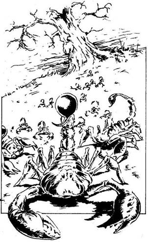
118.
Látod, hogy előtted két másik ösvény csatlakozik ahhoz az ösvényhez, melyen te mész, és egy kis tisztást alkotnak. A 13-as Tisztáson vagy. Ha már jártál itt korábban, lapozz a 303-ra. Ha nem, olvass tovább! Bizsergést érzel a Rézgyűrűd körül. Amint letekintesz a lábad elé, látod, hogy több tucat apró SKORPIÓ rohan feléd. Tedd próbára a SZERENCSÉDET! Ha SZERENCSÉD van, lapozz a 70-re. Ha nincs SZERENCSÉD, lapozz a 182-re.
119.
Mit varázsolsz az Egyszarvúval szemben?
Barátságot? Lapozz a 39-re.
Félelmet? Lapozz a 293-ra.
Áldást? Lapozz a 381-re.
Tüzet? Lapozz a 337-re.
Egyiket sem? Lapozz a 320-ra,
és válassz újra.
120.
A Farkasok Mesterének egyetlen intésére a két FARKAS rád rohan. Egymás után meg kell küzdened velük. Ha mindkettőt megölöd, a Farkasok Mesterével is ki kell állnod.
ÜGYESSÉG ÉLETERŐ
Első Farkas 7 5
Második Farkas 6 6
Farkasok Mestere 11 10
Ha vesztésre állsz, Elmenekülhetsz - lapozz a 314-re. Ha megölöd a Farkasok Mesterét és két kedvencét, lapozz a 154-re.
121.
Egy útkereszteződésnél vagy. Melyik ösvényen mész tovább? Amelyik:
Észak felé vezet? Lapozz a 170-re.
Dél felé vezet? Lapozz a 14-re.
Kelet felé vezet? Lapozz a 275-re.
Nyugat felé vezet? Lapozz a 218-ra.

122.
Érveidet azonnal elutasítja. „A küldetés fontos dolog, barátom - mondja -‚ de a Skorpiók Mocsarában jó, ha az ember hatásos varázslatokkal is rendelkezik. Bátor harcosnak látszol, és talán némi varázsszered is van, de attól félek, hogy varázsló segítsége nélkül soha többé nem fogod megpillantani a napvilágot, ha egyszer beteszed a lábad a Skorpiók Mocsarába!” Érzed, hogy őszintén beszél. Ha még többet szeretnél megtudni ettől az embertől, lapozz a 240-re. Ha inkább elbúcsúzol tőle és nekivágsz egyedül a mocsárnak, lapozz 296-ra.
123.
A Varázsló szeme összeszűkül, majd hátralépve leesik a fejéről magas kalapja, és ledönt egy vázát. A gonosz bűzös gőze csap fel a törött vázából. Az életre kelt szobor megdermed; megtörted a Varázsló erejét, a varázslat nem fog rajtad! Ha folytatod ellene a harcot, lapozz a 225-re. Ha inkább elfutsz, amíg mással van elfoglalva, lapozz a 315-re.
124.
A gonosz varázsló ugyanolyan mérges, mint te. Előhúzza varázsvesszőjét a palástjából. Amikor harcállását felveszi, a pálca megcsillan és fűrészfogú karddá változik. Izzik, amint megforgatja a levegőben - szerinted biztosan varázskard. Így vagy úgy, ez lesz az utolsó csatád kalandjaid során!
Bakó ÜGYESSÉG 13 ÉLETERŐ 18
Élethalálharc ez; nem futamodhatsz meg! Ha megölöd BAKÓT, lapozz a 340-re.
125.
Megölted a RONDA VADÁLLATOT. Nagy csatád emlékére levágod néhány sziklakemény körmét. Bejárod a tisztást, hogy újabb kijáratokat keress, de egyet sem találsz, így hát visszafordulsz azon az ösvényen, amelyen idejöttél s amely kelet felé vezet. Lapozz a 279-re.
126.
Máris varázsolsz, amíg az Óriás ott áll. Szakállát és szemöldökét dér lepi el, s dideregni kezd. „Hű, milyen hideg lett!” - mondja zsémbesen. Ennél több azonban nem történik vele. Lapozz vissza a 145-re, és válassz mást.

127.
Egyáltalán nem látszik rossz embernek, egyszerűen csak félénk. Úgy döntesz, hogy a Barátság-varázslatot alkalmazod ellene. Hirtelen felderül az arca. „Tudnod kell, hogy nincs túl sok látogatóm itt - monda. - De elmondhatok neked mindent, amit csak tudni akarsz. Nagy hatalmú varázsló vagyok! Előbb azonban ülj le, és beszélgess el velem.” Csevegsz egy ideig a Békák Mesterével, majd a lényegre térsz, ismét a növényről kezdesz beszélni, amit keresel. Lapozz a 104-re.

128.
Bár tapasztalt harcos vagy, az Útonállók Vezére is jó kardforgató. Kardja élesen a bordáid közé vág. Vesztettél! Ellenfeled sportszerűen gratulál a remek párbajhoz, aztán a földre dobja a köpenyét, és felajánlja, hogy ülj rá és pihenj, majd így szól: „Most pedig beszéljük csak meg, hogy is állunk a fogadásunkkal! Mit is nyertem?” - kérdi. Oda kell adnod neki valamelyik varázsgolyódat, drágakövedet vagy bármelyik mágikus erejű tárgyadat! Ha e tárgyak közül csupán a Rézgyűrűvel rendelkezel, lapozz a 180-ra. Ha van olyan tárgyad, amit neki adhatsz, válaszd ki, melyik legyen az (ne felejtsd el kihúzni a Kalandlapodon!). Barátságosan búcsúztok el egymástól, és folytatod az utadat. Lapozz a 19-re.
129.
Ha megölted a Medvét, lapozz a 268-ra. Ha elfutottál előle, lapozz a 181-re.
130.
Mit varázsolsz?
Átkot? Lapozz a 260-ra.
Barátságot? Lapozz a 111-re.
Félelmet? Lapozz a 201-re.
Egyiket sem? Lapozz a 288-ra,
és válassz újra.
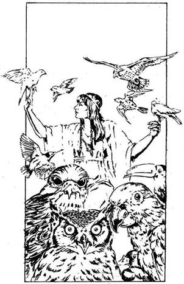
131.
A Papagáj gyöngyszemével figyel, majd így szól: „Csak menj egyenesen előre! Tudja, hogy jössz.” Alacsony pálmafák között haladsz, majd egyszer csak egy tisztáson találod magad. Ezernyi színpompás madár tarkállik a levegőben és a fákon. Hatalmas kócsagok és sasok sétálnak méltóságteljesen. E pompás környezetben egy kis emelvényen gyönyörű nő ül, akiről tudod, hogy nem lehet más, csak a Madarak Mesternője. A neveden szólít, és megkérdi, mi járatban vagy errefelé. Válaszolsz neki, de természetesen attól függően, hogy kit szolgálsz.
Vasöklűt? Lapozz a 23-ra.
Selatort? Lapozz a 164-re.
Bakót? Lapozz a 288-ra.

132.
Megölted a Sast. Ha fel akarsz mászni a fa tetejére, hogy megnézd a fészkét, lapozz a 73-ra. Ha most inkább továbbmész, lapozz a 202-re.
133.
Ezúttal nem látod sehol a Csavargót; eltűnt a fák sűrűjében. Lapozz a 234-re.
134.
Nekiesel a kardoddal a RÁKFŰNEK. A fogókat könnyen lekaszabolod, de a helyükre újak nőnek. Úgy harcolj az éhes tisztással, mintha egy ellenféllel csapnál össze.
Rákfű ÜGYESSÉG 6 ÉLETERŐ 16
Ha Elmenekülsz, lapozz a 187-re. Ha lekaszabolod a Rákfüvet, lapozz a 81-re.
135.
Átkutatod a halott Orkok testét. Fegyvereik rossz minőségűek, élelmük pedig oly gusztustalan, hogy megérinteni sincs kedved. Egyiküknek viszont néhány aranytallérja van, ezeket hozzáteszed a saját készletedhez. Egy másik Orknál viszont elég gyenge minőségű térképet találsz! Amikor ezt összehasonlítod a saját térképeddel, csakhamar megtalálod rajta azt a helyet, ahol jelenleg tartózkodsz, de nem sok újat tudsz meg, hacsak azt nem, hogy tőled egyenesen délre a térképen egy koronát viselő béka képét látod. Lapozz a 309-re.
136.
A Tűz-varázslatot alkalmazod a Kertek Mesterével szemben, de az felemeli karját és eltereli a tüzet. Úgy döntesz, hogy megtámadod. Lapozz a 379-re.

137.
Ez az a hely, ahol a Nyálkával találkoztál. Ha megölted, lapozz a 153-ra. Ha nem ölted meg, most is elállja az utadat, mint korábban tette, és minden sérülés, amit ejtettél rajta - begyógyult! Lapozz vissza a 336-ra, és döntsd el, hogyan bánj el vele!
138.
Előtted ritkulni kezdenek a fák. Kiérsz közülük. A 35-ös Tisztáson vagy. Kelet-nyugat irányban a Rút Ivadék folyó hömpölyög a lábad előtt. Nagy kőhíd ível át rajta. A környék teljesen elhagyatottnak látszik. Ha a hídhoz mész, lapozz a 101-re. Ha nem bízol a hídban és inkább megfordulsz, lapozz a 45-re.
139.
Úgy döntesz, hogy ez nem neked való hely, és amilyen gyorsan csak tudsz, visszafordulsz a falu felé. Ahogy egyre messzebb és messzebb kerülsz a vártól, a melegség kezd csökkenni az ujjadon. Ha meg akarod látogatni Selatort, a jó varázslót, lapozz a 335-re. Ha inkább a titokzatos Vasöklűt keresnéd fel, lapozz a 27-re.
140.
Kardod hegye mélyen a mellkasába vájódik. Döbbenten néz rád, majd szólna… de meghal. A fűrészfogú penge kihull a kezéből. Kíváncsi vagy, miféle furcsa formájú kard ez, ezért fölemeled a földről. Azonnal rájössz, hogy ez egyike a nagy erejű Varázskardoknak, melyek 2 ÜGYESSÉG ponttal jutalmazzák tulajdonosukat. Nem kétséges, hogy mitől volt ő ilyen jó kardforgató! Átvizsgálod a varázsló félelmetes erődítményét, hátha találsz valami rejtett kincset… De a levegő egyre sűrűbbé és fojtogatóbbá válik. A Gyűrűd még mindig gonosz jelenlétét jelzi - ha lehet, még erőteljesebben, mint korábban. Kénkő szagát érzed. Mit teszel?
Megállsz és körülnézel, hátha
találsz valamit? Lapozz a 375-re.
Visszamész a faluba, és megkeresed
Selatort, a jó varázslót? Lapozz a 335-re.
Visszamész a faluba, és megkeresed a
titokzatos Vasöklűt? Lapozz a 27-re.
141.
Az ajánlatot elég elfogadhatónak találod. Benyúlsz a zsákodba, és előveszed belőle a varázsgolyókat, melyeket nem használtál fel. Csönget a cselédlányért, aki egy korty itallal kínál. Felfrissülsz tőle, és a sebeid begyógyulnak. Kalandod itt véget ér. Nem jártál ugyan sikerrel, de sokat tanultál, és talán majd egyszer ismét nekivágsz a mocsárnak!
142.
Egy korábbi csata jeleit látod. Az Orkok teteme eltűnt. A tóból egy félméteres Skorpió mereszti rád a szemét, amikor keresztülrohansz a tisztáson. Lapozz a 227-re.

143.
Amikor a tisztásra érsz, meghallod a RONDA VADÁLLAT rémséges prüszkölését. Korábbi találkozásotokkor nem evett meg, de most újra megpróbálkozik veled! Ha varázslatot akarsz alkalmazni vele szemben, úgy, mint korábban, lapozz a
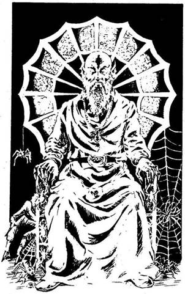
374-re. Ha ezúttal meg akarsz küzdeni vele, lapozz a 176-ra.
144.
Észreveszed, hogy azt az ösvényt, amelyen haladsz, pókháló szövi be. Egy tisztást látsz magad előtt. Mielőtt azonban elérnél a széléig, látod, hogy a téged körülvevő fákat sűrű pókháló lepi és rengeteg pók hemzseg rajta. A 17-es Tisztáson vagy. Ha már jártál itt korábban, lapozz a 345-re. Ha nem, olvass tovább! A tisztás közepén pompás pavilon áll, olyan, mintha a föld fölött lebegne. Ezüstszürke színű, és úgy csillog, akár a legnemesebb hernyóselyem. A pavilonban magas férfi ül. Tömött szakálla és szemöldöke fehér, köntöse ugyanolyan ezüstszürke, mint a sátra. Nyakában csillogó ezüst Pók Amulett lóg. Már tudod, hogy a PÓKOK MESTERE előtt állsz. Amint lángoló zöld szemét rád vetve üdvözöl, érzed, hogy az ujjadon lévő Rézgyűrű gonosz ember jelenlétére figyelmeztet. Mit teszel?
Varázslathoz folyamodsz? Lapozz a 74-re.
Azonnal rátámadsz? Lapozz a 26-ra.
Udvariasan beszédbe elegyedsz
vele? Lapozz a 332-re.
145.
Úgy gondolod, hogy ha varázslatot alkalmazol a dühös Óriással szemben, elbánhatsz vele. Mit varázsolsz?
Átkot? Lapozz a 252-re.
Barátságot? Lapozz a 328-ra.
Tüzet? Lapozz a 211-re.
Jeget? Lapozz a 126-ra.
Egyiket sem? Lapozz a 275-re,
és válassz ismét.
146.
Két hatalmas Béka áll veled szemben. Egyszerre támadnak. Meglepetten veszed észre, hogy a szájuk tele van vékony, éles fogakkal!
ÜGYESSÉG ÉLETERŐ
Első Óriásbéka 5 6
Második Óriásbéka 6 5
Mindkét Béka külön-külön támad mindegyik Fordulóban, s neked kell eldöntened, melyikkel küzdesz meg elsőnek. Támadd meg a kiválasztott Békát a szokásos módon. De amikor a másik ellen küzdesz, még akkor sem ejtesz rajta sebet, ha a te Támadóerőd a nagyobb. Úgy kell venned, mintha kivédted volna a támadását. Ám ha az ő Támadóereje a nagyobb, megsebzett téged a szokásos módon. Ha te győzöl, lapozz a 230-ra.

147.
Leülsz vele szemben, és megkérded: „Mit csinálsz itt?” „Ó - feleli -, kirabolom az erre járókat! Ha valaki erre vetődik ezen az ösvényen, a hálóm rázuhan, és foglyul ejti az illetőt.” Feltekintesz, amerre az ujjával mutat. Tedd próbára a SZERENCSÉDET! Ha SZERENCSÉD van, lapozz a 213-ra. Ha nincs SZERENCSÉD, lapozz a 106-ra.

148.
Azon töröd a fejedet, vajon melyik varázslattal tudnád becsapni az Útonállókat. Valamennyien ágrólszakadtnak látszanak, ezért úgy gondolod, szívesen megbirkóznának valami jó étellel. Elmosolyodsz, mert eszedbe jutott egy jó ötlet. A tisztás szélére Illúzió-varázslattal kövér disznót varázsolsz, mely az ösvény felé tart. Az útonállók hanyatt-homlok rohanni kezdenek felé, hogy zsákmányul ejtsék. Elfutnak a búvóhelyed mellett - észre sem vesznek! Elneveted magad, és gyorsan átfutsz a tisztáson. Lapozz a 19-re.
149.
A tisztás színpompás madarakkal van tele, de embert nem látsz. Úgy látszik, a Madarak Mesternője elment valahova. Átkutatod a tisztást, de madártollakon kívül semmi egyebet nem találsz. Lapozz a 217-re.
150.
A városba vezető Út mindkét oldalán apró üzletek sorakoznak. Az egyik cégtáblája azonnal magára vonja a figyelmedet: „HALICAR - VARÁZSITAL- ÉS VARÁZSLATKERESKEDŐ”. Bemész az üzletbe. Halicar kedves fiatalembernek látszik. Ő Semleges varázsló, és csakis Semleges varázslatokkal kereskedik. Nincs elég aranytallérod, hogy vásárolj tőle, de néhány, a mocsárban szerzett tárgyad talán érdekelheti. Ezeket leteszed elé az asztalra. Az alább felsorolt tárgyak mindegyikét elcserélheted egy-egy Semleges varázsgolyóra: Ibolyaszínű Drágakő; Aranylánc; bármelyik Mester ezüst Amulettje; Aranymágnes vagy az Egyszarvú Szarva. Halicar csak három varázsgolyót adhat el neked - te döntöd el, melyik három legyen ez. Jelöld be Kalandlapodra a három újonnan szerzett varázsgolyót, és húzd ki a cserébe érte adott tárgyakat. Miután mindezt megtetted, elhagyod az üzletet, és elindulsz délnek, vissza a Skorpiók Mocsarába. Lapozz a 343-ra.
151.
Félreugrasz. Az egyik nyílvessző nem talál el, de a másik megsérti a karodat. Vesztesz 1 ÜGYESSÉG pontot. Mit teszel?
Kardot rántasz? Lapozz a 281-re.
Varázsolsz egyet? Lapozz a 399-re.
Elfutsz, hogy mentsd az
életedet? Lapozz a 309-re.
152.
Mit varázsolsz a Kertek Mestere ellen?
Tüzet? Lapozz a 136-ra.
Hervasztást? Lapozz a 264-re.
Illúziót? Lapozz a 347-re.
Barátságot? Lapozz a 117-re.
Egyiket sem? Lapozz a 334-re.
153.
Amilyen gyorsan csak tudod, elhagyod a tisztást. Ha északnak mész, lapozz a 218-ra. Ha nyugat felé indulsz, lapozz a 65-re.
154.
Úgy érzed, csak a Farkasok Mesterének Farkas Amulettjét érdemes magadhoz venned. Elteszed, és elindulsz, hogy megnézd, mi van a kunyhójában. Lapozz a 46-ra.
155.
Őszintén hangzik, amit mondasz; Gronar bólint, és mosolyogva így szól: „Vannak emberek, akik kissé faragatlanok, de mindig készek az igazukért harcolni. Ilyen a jó Selator is… meg te is, Paladin, bár még sokat kell tanulnod!” Ebben a pillanatban úgy látod, mintha Gronar sokkal nagyobb lenne, mint korábban. Tényleg kereszt lenne a palástjára hímezve? És honnan került elő ez a kard? Kérdezgetni kezded, ki is ő, ekkor azonban átnyúl az asztal fölött, és megérinti a homlokodat. Szédülni kezdesz. „Isten áldjon, ifjú Paladin. Menj, és keresd meg Selatort!” - mondja, és eltűnik a szemed elől. Nem tudod, vajon az ajtón ment-e ki, vagy egyszerűen felszívódott… de a szédülésed gyorsan elmúlik, és kezded magad igazán jól érezni. Növeld Kezdeti SZERENCSE pontjaid számát 2-vel, és lapozz a 335-re.
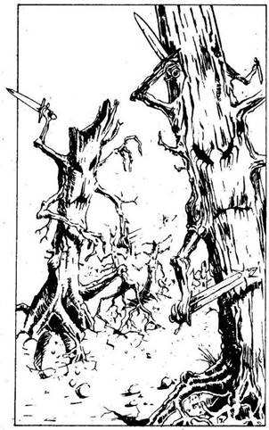
156.
Nehezen lélegzel, de még életben vagy. Ellenfeled egy halom homokká változott a földön. Nevetni kezdesz a Bakón, és a vállad fölött hátradobod az asztal lábát, mely nagy csattanással a csata közben felborított könyvespolc darabjai között ér földet. A Bakó végignéz szobájának romjain.
Ha a küzdelem során nem sebesültél meg. Lapozz a 241-re.
Ha megsebesültél, de 5 vagy ennél kevesebb ÉLETERŐ pontot vesztettél. Lapozz a 193-ra.
Ha a küzdelem során 6 vagy ennél több ÉLETERŐ pontot vesztettél. Lapozz a 326-ra.
157.
Az ösvény veszedelmesen keskenyedik. Egy pillanatig arra gondolsz, hogy talán zsákutcába kerültél. Ekkor azonban ismét szélesedni kezd. Egy igen kicsiny tisztásra érsz. A 18-as Tisztáson vagy. Ha már jártál itt előzőleg, lapozza 279-re. Ha még nem voltál itt, olvass tovább! Számos szokatlan, furcsa fát látsz magad körül. Sötétzöld színűek, elég alacsonyak, és kígyószerű karjuk van. Hirtelen észreveszed, hogy minden kar kardban végződik és mozog! A félelmetes KARDFÁK támadtak meg! Körülvesznek. Ha kardoddal harcolni akarsz ellenük, lapozz a 28-ra. Ha valamilyen varázslattal próbálkoznál, lapozz a 203-ra.
158.
Elmosolyodsz, és kihúzod a zsebedből a darabokra szakadt pergament. Ez az a térkép, melyet oly féltve őriztél az utadon. Jól láthatóan jelölted be rajta az ösvényeket, melyeken végigmentél, és a tisztásokat, ahol harcoltál. Minden lépésed jól követhető rajta. Miközben magyarázol Vasöklűnek, az egyre elégedettebbnek látszik. Végül megveregeti a válladat. Bár erős vagy, mégis megtántorodsz. „Csodálatos! - mondja. - Tökéletes!” Odamegy a fiókos szekrényhez, és kivesz belőle egy smaragdot. „Legyen ez a jutalmad! - szól nevetve. - Az első karavánom holnap indul. A vendégem lehetsz, ameddig csak akarod… és vagyonomnak egy részét is neked adom, ahogy megígértem.” Hálás köszönetet mondasz neki. Boldogan tapasztalod, hogy a titokzatos Vasöklű tiszteletre méltó férfiú; egyszer talán majd még jobban is megismerheted. Most elégedj még azzal, hogy küldetésed sikeresen befejeződött. - Kalandod itt véget ér!
159.
Érzed, hogy mindent megtettél, amit csak tudtál. Most vissza kell térned pártfogódhoz, és be kell számolnod neki sikeredről vagy kudarcodról. Kit szolgáltál?
Selatort? Lapozz a 6-ra.
Bakót? Lapozz a 226-ra.
Vasöklűt? Lapozz az 56-ra.
160.
Úgy gondolod, hogy a Vadállat jó szövetségesed lesz, ezért a Barátság-varázslatot alkalmazod. Sajnos a Ronda Vadállatnak nincsenek barátai! Rohama nem enyhül, meg kell küzdened vele! Lapozz a 176-ra.
161.
Elhagyod az Óriás tisztását, és folytatod utadat. Merre mész?
Északnak? Lapozz a 92-re.
Délnek? Lapozz a 41-re.
Nyugatnak? Lapozz a 121-re.
162.
Elhiszi a történetedet, és beszédbe elegyedik veled. Elmondja, hogy a Mesterek igen nagy hatalmú varázslók. Néhányan közülük Jók, néhányan Gonoszak, néhányan pedig Semlegesek, de a közös jellemzőjük, hogy mindegyiknek Amulett lóg a nyakában. Harcolhatnak is egymás ellen, de nem ölhetik meg egymást mindaddig, amíg az Amulett a nyakukban lóg. Azt is elmondja, hogy az Amulett hatalmas erőt ad, de csakis akkor, ha a varázsló nyakában van. Figyelmesen végighallgatod a sok értékes információt, és megköszönöd hozzád való jóságát. Ezt követően útnak indulsz… de az ösvény elején - ahol már nem láthat - megállsz, és törni kezded a fejed, mit is tegyél.
Add fel és menj el? Lapozz a 352-re.
Varázslattal próbálj meg ellopni
egy amulettet? Lapozz a 245-re.
Támadj rá a kardoddal? Lapozz a 62-re.
163.
Végigmész az ösvényen, egészen a tisztásig. Meglepődnek, amikor észrevesznek és ez a meglepetés csak nő, amikor foghegyről odaköszönsz nekik, majd elmész mellettük. „Merre tartasz?” - kérdik. „Északnak” - feleled. Csodálják nyugalmadat. Az Útonállók megszokták, hogy pénzt követeljenek az arra haladóktól, de nem gyilkosok. Bár megtámadhatnának, hiszen öten vannak egy ellen, mégis úgy gondolják, hogy ez nem lesz tisztességes. Végül a vezérük a következőt ajánlja: Vívj vele párbajt! Aki először sebzi meg a másikat, az győz. Ha elsőnek az Útonállók Vezére ejt rajtad sebet, adnod kell neki valamit értékes tárgyaid közül. Ha te sebzed meg elsőnek, akkor embereivel együtt szabad utat enged neked. Ha elfogadod az ajánlatát, lapozz a 79-re. Ha nem fogadod el, lapozz a 353-ra.
164.
A Rézgyűrű hideg, ebből tudod, hogy a Madarak Mesternője jó varázsló. Elmondod neki, mi járatban vagy, és a segítségét kéred. Vidáman tapsol egyet, és egy pillanatra az az érzésed, hogy egy kislány. „Valóban létezik még Antherica bokor?” - kérdi túláradó boldogsággal. Tudja, hogyha küldetésed sikerrel jár, ez segít majd a Jót elterjeszteni mindenütt. Olyan varázsitalt ad neked, amely képes visszaállítani elért pontszámaid egyikének (te választod meg, melyiknek) Kezdeti értékét. Majd arra kér, hogy maradj csöndben. Kitárja a karját, és számtalan kicsiny madár röppen oda hozzá. Valamit mond nekik, majd így szól: „Selatornak igaza volt! Valóban létezik valahol észak-keleten egy Antherica bokor. Ha akarod, segíthetek, hogy eljuss oda.” Ajánlatát boldogan elfogadod. Lapozz a 248-ra.
165.
Csupán két ösvény vezet el a tisztásról. Ha észak felé mész, lapozz a 388-ra. Ha inkább délnek, lapozz a 105-re.
166.
A Csavargó elismeréssel nyilatkozik bátorságodról: „Most már - mondja - nincs más hátra, minthogy élve kikerülj a Skorpiók Mocsarából. Sok szerencsét! Indulj el dél felé aztán fordulj keletnek, onnan a Sasfészeknél ismét délnek, majd nyugatnak és délnek menj, akkor már elég közel leszel a mocsár déli csücskéhez.” Megköszönöd a segítségét, és miután feljegyezted az útvonalat, amelyet javasolt, lapozz a 234-re.
167.
Néhány varázslat talán jól jöhet ebben a helyzetben. Melyiket választod?
A Hervasztást? Lapozz a 322-re.
A Tüzet? Lapozz a 310-re.
Egyiket sem? Lapozz a 134-re.
168.
Ez az a tisztás, ahol a Víziszörnnyel találkoztál. Ha megölted, itt már nincs semmi keresnivalód, lapozz a 330-ra. Ha még nem ölted meg a Víziszörnyet, az változatlanul itt vár rád ugyanazzal az ÉLETERŐ ponttal, amivel itt hagytad. Lapozz a 209-re, és válassz a három lehetőség közül.
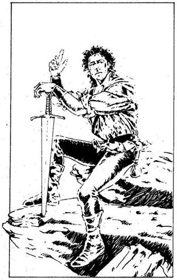
169.
Illúzió-varázslattal egy mérges kígyót varázsolsz önmagad és az Orkok közé. De nem jönnek zavarba tőle; egyre támadnak… és amikor az egyik lehajol, hogy egyet cuppantva megpróbálja elkapni a kígyót, már tudod: rossz varázslatot választottál. Lapozz a 281-re, és harcolj.
170.
Ez az ösvény elég keskeny, számos nagy szikla körül kanyarog. Hatalmas a köd, nem látsz messzire. Hirtelen felszáll a köd, és látod, hogy egy tisztáshoz értél. A 19-es Tisztáson vagy! Ha már jártál itt korábban, lapozz a 363-ra. Ha még nem, olvass tovább! Egy szikla tetejéről egy férfi üdvözöl. Arca napbarnított, zöld inget és nadrágot visel. Már tudod, hogy CSAVARGÓVAL van dolgod. „Hé, harcos! - kiált le neked. - Kit szolgálsz? A Jót vagy a Gonoszt?” Kinek szolgálsz?
Selatornak, a jó varázslónak? Lapozz a 76-ra.
Bakónak, a gonosz varázslónak? Lapozz a 29-re.
Vasöklűnek, a titokzatos
varázslónak? Lapozz a 262-re.
171.
A Nyálka igen erős, de rendkívül buta teremtmény.
Nyálka ÜGYESSÉG 5 ÉLETERŐ 17
Bármikor Elmenekülhetsz - lapozz a 153-ra, de csakis arra menj, amerről jöttél! Ha megölted a Nyálkát, lapozz a 38-ra.
172.
Elbeszélgetsz vele egy kicsit, majd a Farkasok Mestere így szól: „Válaszd a folyón átvezető könnyű utat! Ne keress ott csapdát, ahol nincs!” Megtanít még egy olyan szóra, amelyet, ha Farkasok fenyegetnek, kimondasz, a fenyegetés rögtön barátságba csap át. Ezután távozol. Lapozz a 314-re.
173.
Mély, dörgő hangon felnevet, és látod, hogy a könyvespolcok megremegnek. Egyáltalán nem sértődött meg szűkszavúságod miatt. Sőt, most meggyőződött arról, hogy te vagy az a harcos, akire szüksége van. „Elmondom neked a titkomat - kezdi. - Én egyáltalán nem vagyok varázsló, csupán egy kereskedő a túlsó partról. Sok hatásos varázslatot és varázsszert vásároltam fel. Ezért az emberek azt hiszik, hogy titokzatos varázsló vagyok. Meghagyom őket ebben a hitükben, mert így jobban tisztelnek.” Megkérdezed Vasöklűt, mire van szüksége a Skorpiók Mocsarából. „Információra - feleli. - Ha lenne egy térképem a mocsár ösvényeiről, heteket spórolhatnék meg kereskedőkaravánjaimnak, akik nekem dolgoznak. Ha tudsz nekem egy olyan térképet hozni, amelyen világosan látható az az út, mely Fűzfaligetbe, a Skorpiók Mocsarának északi csücskébe vezet, megkapod annak a pénznek a felét, amit az első év alatt keresek.” Több száz aranytallér is lehet ez az összeg, gondolod, de igen bölcsen még mindig óvatos vagy. „Ha nem vagy varázsló, akkor milyen varázsszert tudsz adni nekem, hogy túléljem a mocsár borzalmait?” - teszed fel a kérdést. Öblös hangon felnevet, majd így szól: „Mondtam, hogy sokféle varázslatot vásárolok. E varázsgolyók közül mindegyikkel tudsz majd egyet varázsolni.” Ekkor egy dobozból számtalan csillogó golyót szór ki eléd. „Választhatsz közülük ötöt. Nem hiszem, hogy mindre szükséged lesz, de lásd nagylelkűségemet.” Most lapozz vissza a könyvben a Varázslatok fejezethez, és válassz ki öt varázslatot… de csak a Semleges varázslatok közül választhatsz, mert Vasöklűnek csak ilyen varázslatai vannak. A kiválasztott öt varázslatot jegyezd fel a Kalandlapodra.
Kezet rázol Vasöklűvel - markának szorítása meglepően erős -‚ majd a Goblin-lány lekísér. Keresztülmész a forgalmas piactéren, majd áthaladsz Láphatáron, és máris a Skorpiók Mocsara felé veheted az utadat. Feladatod a következő: meg kell találnod a mocsár északi részében lévő Fűzfaligethez vezető utat, és az útvonal térképével kell visszajönnöd Vasöklűhöz. Lapozz a 9-re, és vágj neki az útnak!
174.
Hidegen méred végig Bakót szolgája hullája fölött. Dühösen morog magában; még nem döntötte el, mit tegyen. Ha megtámadod, lapozz a 225-re. Ha felajánlod neki, hogy közös ügyeteket civilizált emberek módjára tárgyaljátok meg, lapozz a 193-ra.
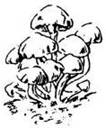
175.
Óvatosan belenyúlsz a zsebedbe, és előveszed a csillogó bogyót. „Ó, de gyönyörű!” - kiált fel túláradó örömmel az öregember. Kiragadja a kezedből, és mormolni kezdi a varázsigét. Szinte azonnal egy piciny növény dugja ki a fejét a földből, és erős, nagy bokorrá terebélyesedik, olyanná, amilyet a mocsárban láttál. Virágok nyílnak rajta, és bíborszínű bogyók lepik el. Selator ezek közül néhányat azonnal elültet, s látod, hogy szinte azonnal bokorrá nőnek. Ekkor rád néz, és így szól: „Ne haragudj rám! Olyan boldog vagyok, szinte elfelejtettem, hogy itt vagy! Ezek a bokrok szépen növögetnek majd, én pedig postagalambokkal küldök egy halom bogyót varázslótársaimnak. Hála neked, hamarosan mindenkinek lesz Anthericája. Nagy tettet vittél ma véghez!” Gyógyító italkeverékkel és meleg étellel kínál, amit hálásan elfogadsz. A vacsora alatt mindenféle fontos és kevésbé fontos dologról beszélsz. Aztán ismét útnak indulsz. Boldog vagy és jól érzed magad. Igazán kitűnően eleget tettél küldetésednek!

176.
Vérszomjas vadállattal van dolgod! Bőre vastag, körmei hatalmasak. Sokkal gyorsabb, mint te vagy! Nem tudsz menekülni; meg kell küzdened vele!
Ronda Vadállat ÜGYESSÉG 9 ÉLETERŐ 10
Ha megsemmisítetted a Vadállatot, lapozz a 125-re.
177.
Sajnos nem tudsz segíteni az Óriásnak. Úgy látod, már elment a kedve a támadástól, így hát elmész mellette. Lapozz a 161-re.
178.
Sajnos te nem vagy varázsló. Ami jó egy varázslónak, az nem biztos, hogy neked is jó. Vonj le magadtól 1 SZERENCSE pontot, miután megkóstoltad a gombát. Lapozz a 352-re.
179.
Három út vezet el a tisztásról. Úgy látod, az észak felé vezető út lefelé tart. Merre mész?
Észak felé? Lapozz a 183-ra.
Dél felé? Lapozz a 10-re.
Kelet felé? Lapozz a 118-ra.
180.
A Rézgyűrűd az egyetlen értéked. Nem akarod feladni, de érzed, nincs más tisztességes megoldás. Szomorúan húzod le a gyűrűt az ujjadról. Az Útonállók vezére látja, hogy kétségbe vagy esve, és megkérdi, mi bajod. Amikor elmondod, hogy miről van szó, felajánlja, hogy vedd vissza a gyűrűt! „Mivel ilyen őszinte vagy - mondja -‚ disznóság lenne, ha elvenném azt az egyetlen tárgyat, amid megmaradt, és amire olyan nagy szükséged van.” Hátba vereget. Elnyerted az Útonállók bizalmát és barátságát. Lapozz a 214-re.
181.
Ismét megpillantod a Medvét, és már ő is észrevett téged. Meg kell küzdened vele. Ha már korábban megsebesítetted, 1 ÉLETERŐ pontot visszanyert. Egyébként az állat harcra kész. Lapozz a 200-ra.
182.
Még mielőtt bármit is tehetnél, a Skorpiók felmásznak a csizmád szárán, és bekúsznak a nadrágod alá. Elkezdenek csípni. Dobj egy kockával, és annyi ÉLETERŐ pontot vesztesz, ahányat dobtál. Dühösen átlépsz a többi skorpió fölött, és elhagyod a tisztást. Lapozz a 319-re.
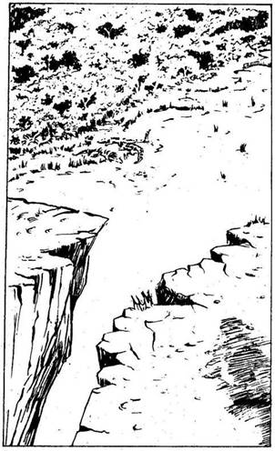
183.
Amint mész, talpad alatt a talaj kövessé válik és az ösvény emelkedni kezd. Kijutottál a komor fák közül, és megpillantod az eget! Felkapaszkodsz egy magas szikla tetejére, ahonnan a zord Rút Ivadék folyóra látsz le. A 20-as Tisztáson vagy. Vagy húsz méter mélységben hömpölyög alattad a folyó, és a sziklafal túl meredek ahhoz, hogy lemássz rajta. Lábad alatt, a mélyben krokodilokat látsz sütkérezni a vízben. Keletre a távolban egy hidat pillantasz meg. Átível a folyón, de a parton nem látsz utat, mely elvezetne a hídhoz. A tisztásról két úton indulhatsz el. Merre mész?
Délre a mocsár felé? Lapozz a 66-ra.
Nyugatra a folyó mentén? Lapozz a 295-re.
Beugrasz a folyóba, és úszva indulsz el
északi irányba? Lapozz a 30-ra.
Beugrasz a folyóba, és úszva indulsz el
kelet felé? Lapozz a 321-re.
184.
Nincs kedved megtámadni: Elmondod neki, mi járatban vagy, és azt is, hogy egy gonosz varázsló küldött. Sajnálkozva rázza meg a fejét. „Egyáltalán nem kellene segítenem rajtad - mondja. - Te ugyanis egy gonosz varázslót szolgálsz. Te magad nem vagy gonosz, mert akkor nem lennél őszinte hozzám.” Eltűnődik egy pillanatra, majd elmosolyodik. „Megmondom, mit teszek. Csinálok egy hamis Madár Amulettet. Bárki, aki megnézi, azt hiszi majd, hogy az igazi Amulettet látja. Így Bakót becsapjuk, te pedig nem okozol majd gondot varázsló testvéreimnek. Tudnod kell azonban, hogy ha a Pókok Mesterével találkozol, azonnal meg kell ölnöd, ő ugyanis gonosz varázsló!” Kezével int, és ebben a pillanatban az Amulett, a valódi szakasztott mása, ott fekszik a tenyeredben. Megköszönöd a kedvességét, és távozol. Lapozz a 217-re.
185.
Szerencsédre elhiszi a történetedet, amit elmesélsz neki. „Jó irányba mész - mondja. - Kelet felé haladva rögtön megtalálod a Kertek Mesterének birtokát, aki igen nagy hatalmú, jó varázsló.” Megköszönöd a segítségét, és továbbmész. Lapozz a 234-re.
186.
Megölted a két Zsebtolvajt. Nem húzod az időt azzal, hogy átkutasd a ruhájukat - kardodat visszadugod a hüvelyébe, és amilyen gyorsan csak tudod, elhagyod Fűzfaligetet, mielőtt még nagyobb bajod esne. Lapozz a 343-ra.

187.
Három ösvényen hagyhatod el a tisztást. Melyiket választod?
A délit? Lapozz a 144-re.
A keletit? Lapozz a 290-re.
A nyugatit? Lapozz a 10-re.
188.
Tüzet varázsolsz. Balszerencsédre semmi gyúlékony anyag nincs itt - a Nyálka vízi teremtmény. Ha egy másik varázslattal próbálkoznál meg, lapozz a 400-ra. Ha egészen más taktikát választasz, lapozz a 336-ra.

189.
Egy fa tövénél, közvetlenül a tisztás szélén friss ásónyomot veszel észre. Kutatni kezdesz, és két Varázsgolyót találsz - az egyikkel Barátságot lehet varázsolni, a másikkal a Kezdeti értékére tudod visszaállítani a SZERENCSÉDET! E két újonnan szerzett Varázsgolyódat jegyezd fel a Kalandlapodon. Lapozz a 348-ra.
190.
Visszamész és nekifutásból ugrasz. Tedd próbára a SZERENCSÉDET! Ha SZERENCSÉD van, biztonságban földet érsz. Ha nincs SZERENCSÉD, kissé korábban érsz földet, és 2 ÉLETERŐ pontot vesztesz, miközben megpróbálsz kijutni a futóhomokból. Lapozz a 270-re.
191.
Melyik varázslatot alkalmazod a Farkasok Mestere ellen?
A Félelmet? Lapozz a 224-re.
A Barátságot? Lapozz a 294-re.
Az Átkot? Lapozz a 93-ra.
A Tüzet? Lapozz a 64-re.
Egyiket sem? Lapozz a 398-ra,
és válassz ismét!
192.
Visszaértél arra a tisztásra, ahol a Tolvajjal találkoztál. Ha nem ölted még meg, lapozz a 267-re. Ha már megölted, lapozz a 179-re.
193.
Bakó mérgesen morog a pusztítást látva. Majd vállat von, és elneveti magát: „Na, beszéljünk az üzletről” - mondja. Átvezet egy másik szobába - egy pillanatra eltűnik) majd italokkal megrakodva ismét megjelenik. „Idd meg, jót tesz neked!” Óvatosan szemügyre veszed a csillogó üvegcséket, majd lassan kiiszod az egyiket. Nevetve szemléli bizalmatlanságodat, de te mindenesetre kezded sokkal jobban érezni magad. Az üvegben gyógyital volt. A többi üvegcsét is kiiszod, és alig tudod leplezni megkönnyebbülésedet, amikor végre egészségesnek, erősnek érzed magad. Valamennyi pontod a Kezdeti értékére áll vissza! Lapozz a 206-ra.
194.
Jókedvűen felnevet. „Remek! - mondja. - Tudtam, hogy neked sikerülni fog! Add ide!” Mit teszel? Átadod az Amuletteket, vagy előbb a fizetségedet kéred? Ha előbb átadod neki az Amuletteket, lapozz a 99-re. Ha előbb inkább a pénzedet kéred, méghozzá azonnal, lapozz a 207-re.
195.
Az 1-es Tisztáson vagy. Tulajdonképpen ez a hely nem egyéb, mint három ösvény találkozási pontja. A talaj ingoványos, nedves, és nagy testű rovarok röpködnek a földet borító pocsolyák fölött. Ha óvatosan megpróbálsz eljutni egy másik ösvényhez, lapozz az 58-ra. Ha inkább átugrod az ingoványos részt, lapozz a 91-re.
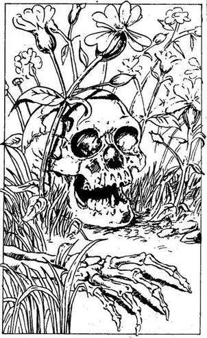
196.
Hervasztás-varázslatot alkalmazol a Félelem Virágai ellen. És csodák csodája, azok elhervadnak és meghalnak! Körülnézel, találsz-e valami használhatót, de a nálad szerencsétlenebb utazók csontjain kívül semmi egyebet nem találsz. Lapozz a 367-re.
197.
A tisztás közepén fekszik az Óriás teteme. Mellette térden állva zokog egy hatalmas termetű nő. Tán a felesége lehet. Az Óriás felesége könnyes szemmel néz fel rád. Nem ijedsz meg tőle, de nem is akarod megtámadni, nehogy még jobban elszomorítsd. Már sajnálod, hogy megölted az Óriást. Vesztesz 2 SZERENCSE pontot. Megesküszöl, hogy soha nem térsz vissza erre a tisztásra, hacsak nem ez a kifejezett utasítás. Lapozz a 161-re.
198.
„Segítség! - kiált fel -, egy gyilkos varázsló! “ Arcát eltorzítja a félelem, és legalább öt métert ugrik hátrafelé. „Öljétek meg!” - kiáltja, ujjával feléd mutatva. Békái hangosan brekegnek és feléd ugrálnak. Meg kell küzdened velük! Lapozz a 146-ra.
199.
Két Útonálló pihen a tisztáson, mely szemmel láthatóan állandó találkahelyük. Amikor felismernek, mosolyogva intenek neked. Üdvözlöd őket és továbbmész. Lapozz a 19-re.
200.
Sok vadállatot és szörnyet megöltél már, a Medvétől sem ijedsz meg. Gúnyosan rákiáltasz, és kirántod a kardodat.
Medve ÜGYESSÉG 7 ÉLETERŐ 8
Ha a Medve jobb helyzetben van, mint te, Elmenekülhetsz bármelyik ösvényen - lapozz a 390-re. Ha megölöd, lapozz a 69-re.
201.
A Félelem-varázslattal próbálkozol, hogy ijedtében neked adja a Madár Amulettet. Rémülten felkiált. Ekkor ezernyi színpompás madár vesz körül - de nem azért, hogy megtámadjanak, hanem azért, hogy megvédjék úrnőjüket. Nem látsz semmit. Egyszer csak felröppennek és elszállnak, de a Madarak Mesternője is eltűnik velük együtt. Lapozz a 217-re.
202.
Nincs értelme húzni az időt! Három irányba mehetsz innen. Merre indulsz?
Délnek? Lapozz a 138-ra.
Keletnek? Lapozz a 41-re.
Nyugatnak? Lapozz a 14-re.
203.
E titokzatos ellenséggel szemben varázslatot alkalmazol. Mit varázsolsz?
Tüzet? Lapozz a 75-re.
Hervasztást? Lapozz a 393-ra.
Növesztést? Lapozz a 114-re.
Egyiket sem? Lapozz a 28-ra,
és harcolj!

204.
Az ösvény fokozatosan keskenyedik, és rengeteg virágot pillantasz meg magad körül. A 23-as Tisztáson vagy! Ha már jártál irt korábban, lapozz a 250-re. Ha még nem jártál itt, olvass tovább! Egyszer csak érzed, hogy feláll a szőr a hátadon. Valami baj van! Rézgyűrűd gonosz ember jelenlétét jelzi. Körülnézel, de az ösvény mentén növő gyönyörű virágokon kívül nem látsz semmit. Ekkor eszedbe jut a régi mese a FÉLELEM VIRÁGAIRÓL. Tudod, hogy a virágoktól támadt benned a félelem. A virágpor váltja ki a félelmet. Remegni kezdesz, Vesztesz 1 ÜGYESSÉG pontot! Mit teszel?
Megpróbálsz elfutni a virágok
mellett? Lapozz a 269-re.
Karddal támadsz rájuk? Lapozz a 32-re.
Varázsolsz egyet? Lapozz a 80-ra.
205.
Gronar újabb korsó sört rendel magának, és leül a székére. „Selator a jó varázsló - mondja. - Bakó a gonosz erőket szolgálja, habár egy magamfajta egyszerű ember nem tudja igazán megítélni ezeket a dolgokat. Vasöklű viszont valóban furcsa fickó. Sokat nem lehet tudni róla, de a hatalma nagy. Mindhárman egy bajnokot keresnek, akinek az oldalán behatolhatnak a Skorpiók Mocsarába. Ennél többet csak úgy tudhatsz meg róluk, ha meglátogatod őket.” Mit teszel?
Selatorhoz, a jó varázslóhoz
mész? Lapozz a 335-re.
Elfogadod a gonosz erők segítségét, ha
az haszonnal jár, és felkeresed a
rosszhírű Bakót? Lapozz a 255-re.
A rejtélyes Vasöklűvel
próbálkozol? Lapozz a 27-re.
206.
Bakó dolgozószobájában ülsz. Díszes tükör lóg a falon - legalábbis tükörnek nézed, de az, amit benne látsz, folyton változik. A falak mentén poros polcok sorakoznak, rajtuk hatalmas könyvek, ronda üvegek és furcsa tárgyak, melyek lehetnek kitömött állatok vagy más tárgyak is.
„Gyűjtő vagyok - szólal meg Bakó -, tudományos dolgokat és műtárgyakat gyűjtök. Nemrég valami furcsa dolog történt. Egy sereg varázsló költözött a Skorpiók Mocsarába - olyanok, akikről semmit sem tudok! A hatalmuk igen nagy, de mégis korlátozott, és úgy tudom, a természettel állnak kapcsolatban. Egyikük, tudom, a Farkasokat felügyeli. A másik meg a növények ura. A tükröm nem tud teljes képet adni a Mocsárról, de nyomoztam utánuk, amennyit csak tudtam. Erejük a nyakukban lógó ezüst Amulettől származik.” „Mondd meg pontosan, mit kell tennem - kéred. - És azt is mondd meg, mit fizetsz!” Így válaszol: „Az Amuletteket akarom! Legalább hármat! Ha ennél többet szerzel, annál jobb. Nem érdekel, miképp jutsz hozzájuk. Ötszáz aranyat adok mindegyikért!” „És milyen varázsszert tudsz adni nekem?” - kérdezed. Bakó fölnevet: „Hát, akár varázslót is csinálhatok belőled - no, egy kis túlzással. Hat Varázsgolyót adok - nem többet. Ennyi - kardforgató karod erejét ismerve - elég kell, hogy legyen a sikerhez.” Megbeszéled Bakóval, hogyan kell varázsolni. Lapozz vissza a könyvben a VARÁZSLATOK fejezethez, és válassz ki magadnak hatot; de csak a GONOSZ és SEMLEGES varázslatok közül választhatsz. Ugyanazt a varázslatot többször is választhatod, csak arra vigyázz, hogy a varázslatok összege hatnál több ne legyen. A varázslatokat jegyezd fel a Kalandlapodon. Elbúcsúzol Bakótól, és nekivágsz a mocsárnak. A gonosz varázsló várához képest a Skorpiók Mocsara vidám, barátságos helynek látszik. Feladatod a következő: legalább három Mester Amulettjét szerezd meg, és hozd el Bakónak. Lapozz a 9-re, és vágj neki az úrnak!
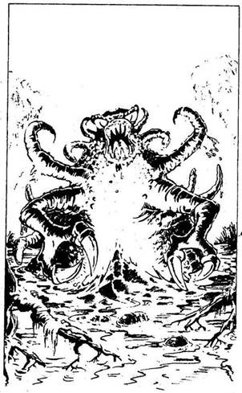
207.
Bakó mérgesen néz rád. „Ügyes vagy - mondja. - Szemtelen, de ügyes!” A szemed előtt számol le ötszáz-ötszáz aranyat minden egyes Amulettért. Ez eltart egy ideig! Végül a pénzt belesöpri egy zsákba, és átnyújtja neked. Lapozz a 358-ra.
208.
Egyre világosabb lesz, ahogy előrehaladsz. A fák koronája közül hirtelen kibukkan a kék ég! Néhány perc múlva egy tisztáshoz érsz, és amikor átmész rajta, látod, hogy a mocsár véget ért! Ha még nem tudod elhagyni a Skorpiók Mocsarát, visszafordulhatsz azon az ösvényen, amelyen ide eljutottál. Addig kell menned, amíg el nem érsz az első tisztásig. Lapozz a 195-re. Ha készen állsz a visszatérésre és számot tudsz adni küldetésed eredményéről, lapozz a 159-re.
209.
Egy ideig kelet felé haladsz. Egy tisztáshoz érsz, amelynek közepén tó van. A 25-ös Tisztáson vagy. Ha már jártál itt korábban, lapozz a 168-ra. Ha még nem, olvass tovább! Közelebb mész a tóhoz… Ekkor egy hatalmas, barna, gumitestű szörny emelkedik ki a vízből, és feléd csapkod a karjaival! Hátraugrasz. A VÍZISZÖRNY utánad cammog. Gyönyörű Ibolyaszínű Drágakő csillog a homlokán. Mit teszel?
Elrohansz? Lapozz a 397-re.
Rátámadsz a kardoddal? Lapozz a 82-re.
Varázsolsz egyet? Lapozz a 34-re.
210.
Ez az a tisztás, ahol megütköztél a Ronda Vadállattal. Ha már megölted, lapozz a 243-ra. Ha még nem ölted meg, lapozz a 143-ra.
211.
Gondolkozol, hogy mit égess el. Talán az Óriás buzogányát? Nem… inkább zsíros szakállát! És varázsolsz! Hirtelen lángra lobban a szakálla. Fújni kezdi, és kezével csapkodja a tüzet, amíg az el nem alszik. Az Óriás iszonyúan dühös. A varázslatod csökkentette ÜGYESSÉGÉT, de még mindig igen erős, és nem engedi, hogy elmenekülj előle.
Óriás ÜGYESSÉG 6 ÉLETERŐ 12
Ha megölöd az Óriást, lapozz a 366-ra.

212.
Elmondod a Békák Mesterének, hogy milyen növényt keresel. „Ó, igen - feleli. - Nem is tudtam, hogy létezik még egyáltalán ez a növény! De hát nekem semmi hasznom sincs belőle, mivel én Semleges vagyok, és csupán a Jó varázslók használhatják fel ezt a növényt. Miért segítsek hát rajtad éppen én?” Mit teszel?
Kardot rántasz ellene? Lapozz a 62-re.
Varázsolsz egyet? Lapozz a 258-ra.
Meg akarod vesztegetni
valamivel? Lapozz a 15-re.
213.
A Rézgyűrű hirtelen melegedni kezd, és ez arra figyelmeztet, hogy a férfi gonosz. Ösztönösen a földre veted magad. A Tolvaj, aki hurkot akart szorítani a nyakadra, hirtelen meglepődik. Talpra ugrasz. Lapozz a 267-re.
214.
Most, hogy az Útonállók jóindulatúak veled, megkérdezed, hol is vagy tulajdonképpen. Közlik, hogy Fűzfaligettől nem messze, északra. Még hozzáteszik, hogy a város három fogadója közül a Görbe Lándzsa messze a legjobb, ott nyugodtan megbízhatsz a fogadósban. Elbúcsúzol az Útonállóktól, és távozol. Lapozz a 19-re.
215.
A Farkasok morogva vetik rád magukat. Nincs időd varázsolni. Teljes erőből meglendíted a kardodat, és lekaszabolod az első rád támadó Farkasnak a fejét. Társa óvatosan köröz körülötted. Meg kell küzdened vele.
Farkas ÜGYESSÉG 7 ÉLETERŐ 6
Ha megölöd, lapozz a 247-re.
216.
Túl sokan vannak ahhoz, hogy megküzdj velük. Ellepik a csizmádat, és már a nadrágod szárán másznak fölfelé. Beléd marnak. Dobj egy kockával, és annyi ÉLETERŐ pontot vonj le magadtól, ahányat dobtál. Mérgesen átugrod a többi Skorpiót, és elhagyod a tisztást. Lapozz a 319-re.

217.
A tisztásról kivezető egyetlen út az az ösvény, amelyen idejöttél. Ismét délnek fordulsz. Hamarosan elérsz a Félelem Virágainak tisztására. Lapozz a 250-re.
218.
Az ösvény szélesedni kezd, és egy tisztáshoz érsz. A 15-ös Tisztáson vagy! Egy másik kivezető ösvényt látsz. Mellette hirtelen halvány izzást veszel észre. Lehet, hogy csak egy vibráló fénynyaláb, de az is lehet, hogy a LIDÉRCFÉNY! A tisztás nyugati szélén lebeg, majd ismét visszatér. Ekkor jól látod, hogy az ősvény, ahol a LIDÉRCFÉNY táncol, bozóttal benőtt, sötét út. Úgy érzed, mintha mutatni akarna neked valamit. Követed vagy továbbmész?
Követed nyugat felé? Lapozz a 72-re.
Nem követed, hanem elindulsz
délnek? Lapozz a 336-ra.
Nem követed, hanem elindulsz
keletnek? Lapozz a 121-re.
219.
Megölted a Csavargót, bár nem volt könnyű a csata. Amikor átkutatod a ruháját, egy éles tőrt és némi élelmet találsz. Magadhoz veszed nagyszerűen megmunkált sisakját is, amely 1-gyel növeli ÜGYESSÉG pontjaidnak a számát! Lapozz a 234-re.
220.
Csevegsz vele egy keveset, de sehogy sem tudod megkaparintani az Amulettet, sem a beszélgetést olyan irányba terelni, amiből megtudnál valamit. Ha úgy döntesz, hogy egyszerűen megmondod a Kertek Mesterének az igazat és elkéred tőle a Virág Amulettet, lapozz a 292-re. Ha más taktikát választasz, lapozz a 334-re.
221.
Előrántod a kardodat, és várod az Egyszarvú támadását.
Egyszarvú ÜGYESSÉG 11 ÉLETERŐ 4
Szerencséd, hogy az állat már előzőleg megsérült. Két fordulóban kell vele megverekedned. Ekkor, ha úgy akarod, Elmenekülhetsz; lapozz a 348-ra. Ha legyőzöd az Egyszarvút, lapozz a 277-re.
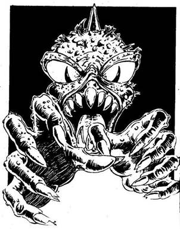
222.
Hatalmas agancsos DÉMON jelenik meg közted és Bakó között. Zöld tüskés szőr és gusztustalan bibircsókok borítják a testét. Soha nem láttál még ennél rondább teremtményt! A varázsló rád mutat csontos kezével, és így szól hozzá: „Öld meg ezt a bolondot! A gyűrűt add ide az ujjáról, a többit megeheted!” Iszonyúan elővigyázatlan voltál ezzel a gonosz emberrel, és most fizetned kell ezért.
Démon ÜGYESSÉG 16 ÉLETERŐ 12
Nem futhatsz el, mert a Démon nagyon gyors. De szerencsédre nincs más fegyvere, csak hatalmas bütykös keze, így hát van esélyed. Ha megölöd a Démont, lapozz a 174-re. Ha nem, kalandod itt véget ér, még mielőtt elérnéd a mocsarat… A gonosz varázsló kéjes pillantással szemléli új szerzeményét, a hatalmas bibircsókos Démon pedig nagyokat csettint a nyelvével tested fölött…
223.
Úgy döntesz, hogy megfordulsz, és egy másik ösvényen mész tovább. Lapozz a 270-re, de a tisztást ugyanazon az ösvényen hagyd el, amelyen idejöttél.
224.
A Tűz-varázslatot alkalmazod a Farkasok Mestere ellen. Az megfordul, és visszarohan a házába - de a másik két Farkas rád támad. Mindkettőjükkel meg kell küzdened!
ÜGYESSÉG ÉLETERŐ
Első Farkas 7 5
Második Farkas 6 6
Ha úgy érzed, vesztésre állsz, Elmenekülhetsz; lapozz a 314-re. Ha megölöd a Farkasokat, lapozz a 46-ra.
225.
„Szemtelen gazfickó! - kiáltja a varázsló. - Saját kezemmel foglak megölni!” Egy ébenfa pálcát húz elő köntöse redőiből. Amikor megforgatja a levegőben, az vörösen izzó fűrészfogú karddá változik. Nincs más választásod, meg kell küzdened vele.
Bakó ÜGYESSÉG 9 ÉLETERŐ 10
Ha megöl téged, talán majd óvatosabb leszel következő életedben, ha gonosz varázslóval hoz össze a sors. Ha megölöd, lapozz a 140-re.
226.
A mocsár szélétől egy kőhajításra áll Bakó gonoszságot árasztó vára. Ismét látod a hatalmas vasajtót, mely most is rettenetes, de mintha valahogy megváltozott volna. Reszketve készülsz bekopogni, de az ajtó máris kinyílik. Bakó áll előtted mohón remegve. „Meghoztad? Megszerezted? Hol vannak?” kérdi kezét feléd nyújtva. Mit mondasz neki, mit hoztál?
Egyetlen Amulettet sem? Lapozz az 54-re.
Egy vagy két Amulettet? Lapozz a 7-re.
Három vagy több Amulettet? Lapozz a 194-re.
227.
Három ösvényen mehetsz tovább a tisztásról. A kelet felé vezető mintha keskenyebb és sötétebb volna, mint a másik kettő. Merre mész?
Északnak? Lapozz a 66-ra.
Keletnek? Lapozz a 388-ra.
Nyugatnak? Lapozz a 320-ra.
228.
Jól tudtad, hogy a Kardfák magja még jól jön neked! Szétszórod őket magad előtt, és Növekedést varázsolsz! Egy szempillantás alatt sűrű falként állnak előtted a fák, és fenyegetően lengetik a kardjukat. A Ronda Vadállat bőszülten támad rájuk, és az egyik fát sikerül is azonnal kidöntenie. Ekkor már tudod, hogy a többi fára is ez a sors vár, így hát gyorsan sarkon fordulsz, és visszamész a keleti lejtős ösvényen. Lapozz a 279-re.
229.
„Bocsásson meg, Óriás Úr! - mondod neki. - Nem akartam megzavarni. Mi a baj, mondja?” Harci kedve hirtelen elszáll. Leül, és szipogni kezd. Mivel nem talál semmit, amivel a szemét megtörölhetné, kézfejével itatja fel a könnyeit. Sajnálkozva nézed… olyan nagy és olyan bánatos! „Valaki ellopta az új zsebkendőmet - mondja. - A feleségem varrta nekem, és elvesztettem. Biztosan nagyon szomorú lesz miatta. Sehol sem találom, pedig nélküle nem mehetek haza!” Megkérdezed, milyen volt a zsebkendő, erre elmondja, hogy élénkpiros és gyönyörű. Ha van a hátizsákodban egy Piros Köpeny, lapozz a 286-ra. Ha nincs, lapozz a 177-re.
230.
Legyőzted az Óriásbékákat, de Mesterüket sehol sem látod. Biztosan a mocsárba vette be magát. Nem csekély undorral lemosod kardod éléről a rátapadt vért és nyálat, majd átkutatod a tisztást, s közben arra gondolsz, hátha hátba támad. De semmi ilyesmi nem történik. Lapozz a 352-re.
231.
Tedd próbára a SZERENCSÉDET! Ha SZERENCSÉD van, lapozz a 18-ra. Ha nincs SZERENCSÉD, lapozz a 259-re.
232.
Óvatosan leszeded a bogyót, és a hátizsákodba teszed. Ha Selator szolgálatában állsz, lapozz a 389-re. Ha nem, elhagyod a tisztást, és ismét délnek fordulsz. Lapozz a 342-re.
233.
A Sas leszáll a fa egyik ágára, és onnan figyel. Tekintete kegyetlen, horgas csőre vészjóslóan csattog. Ha megtámadod, lapozz a 392-re. Ha óvatosan visszafordulsz, lapozz a 25-re.
234.
Két ösvény vezet tovább a tisztásról. Ha kelet felé mész, lapozz a 305-re. Ha inkább délnek fordulsz, lapozz a 121-re.
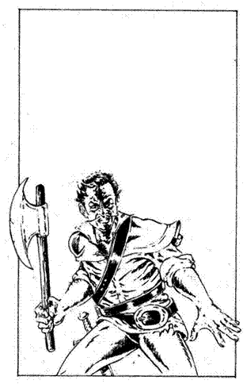
235.
Háttal állsz a nagy fának, úgyhogy egyszerre csak egy Útonálló tud megközelíteni. Habár öten vannak, csak a három legerősebb sorakozik fel ellened.
ÜGYESSÉG ÉLETERŐ
Útonállók Vezére 9 10
Második Útonálló 8 8
Harmadik Útonálló 8 11
Mivel beszorítottak a fák közé, nem menekülhetsz előlük. Ha megölöd ezt a három Útonállót, a másik kettő elmenekül - lapozz a 19-re.
236.
A mocsáron át megtett utad után ez több, mint amennyit el tudsz viselni. Kivont kardodat lengetve lerohansz, és figyelmezteted a lent vigadókat, hogy maradjanak csendben! Kinevetnek. Dühösen mész oda hozzájuk, de ekkor a kocsmáros megragad egy széket, és hátulról ráhúz a karodra, melyből kihullik a kard. Karod megsérül; vesztesz 2 ÜGYESSÉG pontot. Rádöbbensz, hogy nem tudsz mindannyiukkal megküzdeni. Sarkon fordulsz, és visszamész a szobádba. Lapozz a 116-ra.

237.
A Hervasztást választod a Víziszörny ellen, de ez a varázslat nem hat rá: a szörny ugyanis állat, nem növény. Lapozz a 82-re, és küzdj meg vele!
238.
A Kertek Mesterének tisztásán vagy. Éppolyan gyönyörű, mint mindig, de egy lelket sem látsz sehol. Elindulsz vissza, nyugat felé. Lapozz a 363-ra.
239.
A Farkasok Mesterének tisztásán vagy. A kunyhó zárva van, sehol egy lélek. Lapozz a 314-re.

240.
Igazat adsz Gronarnak. Utad sokkal érdekesebb lesz, ha meghatározott küldetésed van. A férfi helyeslően bólogatva így folytatja: „Jelenleg három férfi tartózkodik itt a városkában, akik egyedül nem tudnak elmenni a mocsárba. Mindannyiuknak szükségük van egy olyan harcosra, aki hajlandó a küzdelemre az ő oldalukon. Hármuk közül az első egy Öreg varázsló, aki a Jó szolgálatában áll.” Szünetet tartva jókorát húz a korsójából. Ha végig akarod hallgatni mondandóját, lapozz a 205-re. Ha félbeszakítod azzal, hogy te csak a Jót vagy hajlandó szolgálni, lapozz a 155-re.
241.
Bakó meg van elégedve veled. Hátba vereget, és így szól: „Te vagy az, akit keresek! Gyere velem, és meg- beszéljük, hogyan lehetünk gazdagok. De előbb tessék, ez a tiéd” - mondja, és köpenye redőiből elővesz egy miniatűr kardot, mely normál nagyságúvá nő, miközben átnyújtja neked. Ez varázskard - nyersz 1 ÜGYESSÉG pontot, ahányszor csak használod majd. Miközben a kardot vizsgálod, Bakó megérint a pálcájával. Ha eddigi küzdelmeid során vesztettél SZERENCSE pontjaidból, most azok visszaállnak a Kezdeti értékükre. Lapozz a 206-ra.
242.
Amint átléped a küszöböt, észreveszed, hogy a zsák nem olyan nehéz, mint volt, amikor kaptad! Több mint az eredeti súlyának felével kevesebb! Azok után, hogy kockára tetted érte az életedet a mocsárban, Bakó becsapott! Mit teszel?
Visszarohansz és rátámadsz? Lapozz a 124-re.
Visszarohansz és varázsolsz
egyet? Lapozz a 256-ra.
Megelégszel azzal amid van, és
távozol? Lapozz a 358-ra.
243.
Nincs itt semmi látnivaló, kivéve a Ronda Vadállat hatalmas csontjait és a rajtuk lakmározó rákszerű férgek tömegét. Nem akarsz közelebb menni, inkább elindulsz kelet felé, és elhagyod a tisztást. Lapozz a 279-re.
244.
Az Óriásnak elmondod, mi járatban vagy. Vidáman felnevet, majd közli veled, hogy egy kis tisztáson, észak felé nemrég látott egy olyan bokrot, amilyet keresel. „De óvakodj a Farkasoktól!” - figyelmeztet. Megköszönöd, és jó napot kívánva neki továbbmész. Lapozz a 161-re.

245.
Illúzió-varázslattal közepes nagyságú békává változtatod magad. Észrevétlenül átugrálsz a többi béka között a tisztáson, és a gomba mögé kerülsz, amelyen ott ül a Békák Mestere. Nem akarod megölni, hiszen barátságos volt hozzád. Ehelyett gyorsan lekapod a nyakából az ezüst Amulettet. Miközben ezt teszed, belököd a tóba! Köpköd, prüszköl, de a szája tele van vízzel, így nem tudja elmondani a varázsszavakat. Futva mész az ösvényhez. Lapozz a 352-re.
246.
Átkutatod a halott Útonállók testét. Az egyiknél egy korsóban valamilyen port találsz. Kesernyés gyógynövényszaga van. Ha nem nyúlsz hozzá, hanem továbbmész, lapozz a 19-re. Ha egy keveset a sebedre szórsz belőle, lapozz a 67-re.

247.
Figyelmesen körülnézel, de nem találsz semmit, kivéve egy szokatlan formájú bokrot a tisztás közepén. Sűrű, sötétzöld levele van, és fehér virágai. A bokor tetejénél egy nagy, bíborszínű bogyót látsz. Mit teszel?
Megeszed a bogyót? Lapozz a 20-ra.
Letéped a bogyót, és elteszed? Lapozz a 232-re.
Hozzá sem nyúlsz, és továbbmész
délnek? Lapozz a 342-re.
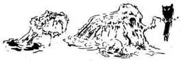
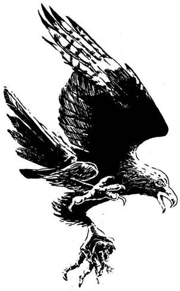
248.
A lány éles hangon felkiált. Kiáltását visszhangozzák a fák. „A nagy Sast szólítottam, ő szokott elvinni mindenhová, ha utazom - mondja. - Nem úgy fog száguldani veled, mint egy táltos, hanem, ha megparancsolom neki, visszavisz a fészkéhez, a Rút Ivadék folyó túlpartjára. Órákig tartó veszélyes úttól kímél majd meg!” Mikor e szavakat kimondja, szárnycsapkodást hallasz, és a hátad mögött egy hatalmas Sas száll le. Nem érted, mit mond neki a lány, de a madár hirtelen a levegőbe röppen. Karmaival derékon ragad, és viharos szárnycsapásokkal elröpül veled. A tisztás egy perc alatt eltűnik alattad. A Sas északkelet felé tart. Lábad alatt tisztások suhannak el, majd megpillantod a Rút Ivadék folyó szélesen hömpölygő, zöldes vizét. Hatalmas krokodilok és egyéb szörnyek hemzsegnek benne. Ekkor a Sas leszáll veled azon a tisztáson, ahol az egyetlen magas fa tetején megpillantod ágakból összehordott hatalmas fészkét. A Sas letesz a földre, és továbbröpül. A 16-os Tisztáson vagy! Lapozz a 202-re.

249.
Tedd próbára a SZERENCSÉDET! Ha SZERENCSÉD van, biztonságban visszajutsz a tisztásra. Ha nincs SZERENCSÉD, a sötétben botladozva megsérül a karod - 1 ÜGYESSÉG pontot vesztesz. Ezt követően távozhatsz. Ha dél felé mész, lapozz a 336-ra. Ha keletnek mész, lapozz a 121-re.
250.
Azon a tisztáson vagy, ahol a Félelem Virágaival találkoztál. Ha elpusztítottad őket, lapozz a 367-re. Ha hagytad őket élni, tudnod kell, hogy gyorsan keresztül kell rohannod közöttük, nehogy felfaljanak. Lapozz a 269-re.
251.
Megölted a Kertek Mesterét, pedig ő Jó varázsló volt. Sajnálni kezded a halottat. Vonj le magadtól 3 SZERENCSE pontot! Leemeled a nyakában lógó virág Amulettet, és a tisztásról kivezető egyetlen ösvényen elindulsz nyugat felé. Lapozz a 363-ra.
252.
Minden bátorságodat összeszedve az Átok-varázslatot próbálod ki az Óriáson. És mi történik? Látod, amint üvöltve tántorogni kezd. Eszeveszetten dörzsölni kezdi a szemét. Az Óriás megvakult! Feléd vonszolja magát, de megbotlik, és elterül a sárban. Gyorsan szeded a sátorfádat, még mielőtt a varázs elszállna róla. Ekkor magadon is érezni kezded az átok hatását. Dobj egy kockával, és vonj le ÉLETERŐ pontjaidból annyit, ahányat dobtál! Ha még mindig életben vagy, lapozz a 161-re.
253.
Megiszod a folyadékot. Azonnal furcsán kezded érezni magad. Az italtól azt várod, hogy erőssé, daliássá tegyen… ez azonban Törpéknek való varázsszer! A következő órában alacsonyabb és zömökebb leszel, és az orrod igencsak megnő. Ezután a hatás megszűnik. Vonj le 1-et ÜGYESSÉG pontjaidból, de csak a következő csata tartamára. Lapozz a 88-ra.
254.
A Hervasztás-varázslatot alkalmazod egy parti óriás- fára. A fa kidől, és a patak fölött hidat alkot, amelyen gyorsan átmész. Amikor átérsz a túlpartra, a fák teljesen elkorhadnak, és belezuhannak az árba. Mehetsz innen északnak vagy délnek. Ha észak felé indulsz, lapozz a 157-re. Ha délnek tartasz, lapozz a 398-ra.
255.
Bakó egymagában lakik egy várban, a mocsár közelében. Amikor az iránt érdeklődsz, hogy merre is van ez a vár, senki sem óhajt szóba állni veled; egy öregasszony szemmel ver, egy fiatal lány pedig elfut előled. Végül is a piactéren egy szikár Útonálló útbaigazít, és elindulsz, hogy találkozz azzal a varázslóval, akitől mindenki reszket. Amint megpillantod a várát, Rézgyűrűd melegedni kezd. Bakó gonosz ember - valóban nagyon gonosz! Ez az érzésed csak nő, amint közeledsz a sötét, soktornyú, különös boltívekkel és rémisztő szobrokkal díszített várhoz. Ha felmész a vár kapujához, lapozz a 40-re. Ha inkább visszafordulsz a faluba, lapozz a 139-re.

256.
Bátor vagy - de az is lehet, hogy csak vakmerő -‚ amiért a gonosz varázsló ellen varázsolni akarsz. Mit varázsolsz?
Átkot? Lapozz a 274-re.
Félelmet? Lapozz a 365-re.
Tüzet? Lapozz a 385-re.
Illúziót? Lapozz a 351-re.
Egyiket sem? Lapozz az 57-re.
257.
Dobj két kockával. Ha a kapott összeg kevesebb vagy ugyanannyi, mint ÜGYESSÉG pontjaidnak a száma, keresztülugrottál az undorító Nyálkán. Nyersz 2 SZERENCSE pontot, és lapozz a 153-ra. Ha a kapott összeg nagyobb, mint ÜGYESSÉG pontjaidnak a száma, a Nyálka tetején landolsz. Lapozz a 311-re.
258.
Nagyon kockázatos varázslatot alkalmazni varázslóval szemben. Mit varázsolsz?
Félelmet? Lapozz a 198-ra.
Barátságot? Lapozz a 127-re.
Egyiket sem? Lapozz a 212-re,
és válassz újra.

259.
Az Útonállók rémülten pattannak fel, de magukhoz térnek, és szembefordulnak veled. Amikor látják, hogy egyedül vagy, megdühödnek. Káromkodva neked támadnak. Meg kell küzdened velük! Lapozz a 235-re.
260.
Átok-varázslatot alkalmazol a Madarak Mesternője ellen. Egy pillanatra úgy látod, hogy a varázslat nem fog. Ekkor azonban megkeményedik az arca. Átkod rettenetes dolgot művelt vele… Gonosszá változtatta! Dühösen ordítani kezd. Egy intésére sok száz madár röppen fel, és feléd tart. A madarak hirtelen megfordulnak. A Madarak Mesternője legyőzte Átkodat, és visszanyerte eredeti énjét. De már késő! Utolsó pillantásoddal szomorú arcát látod - és meghalsz. Kalandod itt véget ér.
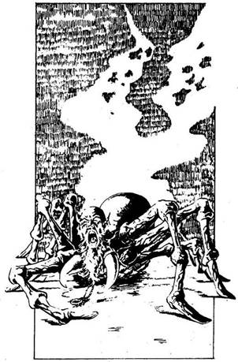
261.
Egy gonosz emberrel szemben csakis a Gonosz varázslat a legjobb, gondolod, és a Pókok Mesterével szemben az Átok-varázslatot alkalmazod. Felordít, amint az Átok lesújt rá, és rángatózva elterül a földön. Vonaglás közben megváltozik: az Átok saját teremtményei egyikévé változtatta - egy emberarcú szürke Óriáspókká! Ekkor az Átok lassan rajtad is fogni kezd. Dobj egy kockával, és annyi ÉLETERŐ pontot vesztesz, ahányat dobtál. Ha még mindig életben vagy, az Óriáspók rád támad.
Óriáspók ÜGYESSÉG 8 ÉLETERŐ 9
Nem menekülhetsz. Ha megölöd az Óriáspókot, lapozz a 354-re.
262.
„Egy Vasöklű nevű kereskedő szolgálatában állok - mondod. - Nem tudom, mennyire jó vagy gonosz. Megpróbálok térképet készíteni a Mocsárról.” Ha már jártál Fűzfaligetben, lapozz a 166-ra. Ha még nem, lapozz a 115-re.
263.
Felismered a helyet, ahol megtámadott a Rákfű. Ha kiirtottad a füvet, lapozz a 187-re. Ha még nem, lapozz a 33-ra.

264.
Hervasztás-varázslatot alkalmazol a Kertek Mestere ellen. Mivel ő maga nem növény, rá a varázslat nincs hatással, de dühbe gurul, amikor a varázslat őt kikerülve kipusztít mögötte egy fát. Karját a magasba lendítve tüzet varázsol ellened. Hajad lángba borul. Gyorsan megcsapkodod a kezeddel a fejedet, hogy elfojtsd a lángokat; égési sérüléseid miatt 2 ÉLETERŐ pontot vesztesz. Ekkor karddal támadsz a Kertek Mesterére. Lapozz a 379-re.

265.
A tisztáson vagy, ahol az Egyszarvúval találkoztál, de ezúttal nem találsz itt senkit. Lapozz a 348-ra.
266.
Odadob neked egy zsák aranyat. Elkapod és sarkon fordulsz. Mogorván mész végig a sötét folyosón az undorító ajtó felé. Lapozz a 242-re.

267.
Hallod, amint a Tolvaj dühösen felszisszen, és máris rád veti magát. Csupán egy kés van a kezében, de igen hevesen támad.
Tolvaj ÜGYESSÉG 10 ÉLETERŐ 9
Nem menekülhetsz, mert a Tolvaj gyorsan támad. Ha megölöd a Tolvajt, lapozz a 386-ra.
268.
Ezúttal néhány lerágott csonton kívül semmit sem látsz a tisztáson. Sietve továbbmész. Lapozz a 390-re.
269.
Félelmed egyre nő, ahogy a Félelem Virágai elől menekülsz; vesztesz még egy ÜGYESSÉG pontot. Amikor elhagyod a virágok tömegét, félelmed kissé csökken. Lapozz a 367-re.
270.
Innen két ösvény vezet tovább. Ha észak felé mész, lapozz a 275-re. Ha inkább nyugatnak mész, lapozz a 331-re.
271.
Amikor elhaladsz a Farkasok Mestere mellett, kihúzod a kardodat és rávágsz. Vesztesz 1 SZERENCSE pontot, amiért ilyen gyáván rátámadtál. Lapozz a 120-ra, és küzdj meg vele, de vonj le 2 pontot a Mester ÉLETEREJÉBŐL.
272.
Nagy nehezen visszajutsz a faluba. Fáradt vagy, és csuromvíz a ruhád, mert beleestél az iszaplyukba. Vonj le magadtól 2 SZERENCSE pontot, és légy hálás a sorsnak, hogy életben maradtál. A fogadóban meleg fürdőt veszel, és kissé magadhoz térsz. Bocsánatot kérsz Gronartól korábbi hevességedért. Megrázza a fejét, majd óvatosan elmosolyodik: „Látom, erős vagy és szerencsés, különben egyáltalán nem jöttél volna vissza!” - mondja. Lapozz a 205-re.
273.
Amint sietve mész az ösvényen a falu felé, érzed, hogy Rézgyűrűd bizseregni kezd az ujjadon. Hátranézel, és látod, hogy egy fekete alak repül ki a várból. Gyorsan elrejtőzöl a bokrok között. Nem tudod kideríteni, hogy ki vagy mi üldöz. Ekkor látod, hogy az a valaki vagy valami visszatér a várba. Futva teszed meg a faluba vezető hátralevő utat. Zihálva, sárosan érkezel meg. Jó lenne, ha jobb patrónust választanál magadnak! Ha beszélni akarsz Selatorral, a jó varázslóval, lapozz a 335-re. Ha a titokzatos Vasöklűt szeretnéd inkább megismerni, lapozz a 27-re.
274.
Átok-varázslatot alkalmazol a gonosz varázslóval szemben… azt a varázslatot, amit tőle kaptál. Felüvölt és a torkához kap. Valamennyi varázslat közül a saját Átok-varázslata a leghatásosabb ellene! Holtan rogy a földre. Ekkor a varázslatot önmagadon is érezni kezded. Dobj egy kockával, és annyi ÉLETERŐ pontot vesztesz, ahányat dobsz. Ha még életben vagy, próbáld meg átkutatni titokzatos várát, hátha találsz valamilyen rejtett kincset… A levegő azonban egyre nehezebb, szinte nyomasztó. Gyűrűd még mindig a gonosz jelenlétére figyelmeztet, méghozzá ha lehet, még erőteljesebben, mint eddig. Kénkő szagát érzed a légben. Ha még néhány percig itt akarsz maradni, hogy megnézd, mit találsz, lapozz a 375-re. Ha inkább azonnal távozol, lápozz a 298-ra.
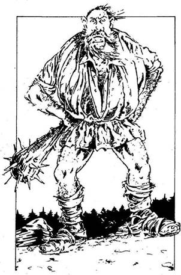
275.
Menet közben megbotlasz egy gödörben. Ahogy jobban megnézed a gödröt, látod, hogy az nem más, mint egy közel fél méter hosszú szöges bakancs által okozott lábnyom! A 7-es Tisztásnál vagy! Ha már jártál itt korábban, lapozz a 342-re. Ha még nem, olvass tovább! Egy hatalmas ÓRIÁST látsz a fejed fölé tornyosulni! Dühösnek látszik, és jókora buzogányt forgat a kezében. A gyűrű az ujjadon nem jelzi, hogy gonosz emberrel lenne dolgod. Bár az Óriás valójában nem gonosz szerzet, mégis veszélyes. „ERRE NEM MEHETSZ TOVÁBB!” - dörgi feléd. Mit teszel?
Rátámadsz? Lapozz a 12-re.
Megpróbálsz szót érteni vele? Lapozz a 229-re.
Varázsolsz egyet? Lapozz a 145-re.
276.
Zsebedből előveszed a nagy Ibolyaszínű Drágakövet, melyet a tavi szörny fejéről vettél le, és átadod neki. Szélesen elmosolyodik - most békábbnak néz ki, mint korábban bármikor! „Rendben van - mondja -‚ ez elég indok a számomra!” Elteszi a drágakövet. Lapozz a 104-re.
277.
Az Egyszarvú halott. Tudod, hogy az Egyszarvú szarvának hatalmas varázsereje van, ezért levágod és a hátizsákodba teszed. Ha most tovább akarsz menni, lapozz a 348-ra. Ha itt maradsz és átkutatod a tisztást, lapozz a 86-ra.
278.
Meg akarod ijeszteni az Útonállókat, de bántani nem akarod őket. Ezért a Félelem-varázslatot alkalmazod. Kiabálva és a kardodat lengetve előlépsz a fák mögül. Az Útonállók halálra rémülnek. Azt hiszik, hogy az őket megtámadó sereghez tartozol, ezért aztán hanyatt-homlok berohannak a tisztást körülvevő erdőbe. Elrejtőznek a mocsárban, amikor elhaladsz mellettük. Nyugodtan mehetsz, nem bántanak. Lapozz a 19-re.
279.
Legnagyobb megdöbbenésedre a félelmetes Kardfák máris újra megnőttek! Ha a kardoddal akarsz harcolni ellenük, lapozz a 28-ra. Ha inkább varázsolsz egyet, lapozz a 203-ra.
280.
Az északi ösvényen mész, mely fokozatosan keskenyedni kezd, és a mocsár már nem olyan félelmetes. A lápot lassan erdő váltja fel, és csakhamar egy útjelző táblát veszel észre, melyen ez a felirat látható: „FŰZFALIGET FELÉ.” Ha már jártál Fűzfaligetben, lapozz a 355-re. Ha még nem voltál itt, olvass tovább! Nem sokkal később emberi hangokat hallasz, és Erdészek csoportjával találkozol. Elkísérnek egészen Fűzfaligetig. Kalandozásaid után csak arra vágyol, hogy találj egy fogadót, ahol végre kialhatod magadat. Az Erdészektől megtudod, hogy három fogadó van Fűzfaligetben. Melyikbe mész?
A Fekete Medvébe? Lapozz a 395-re.
A Görbe Lándzsába? Lapozz a 78-ra.
Tankréd Táltos Lovába? Lapozz a 289-re.
281.
Rátámadsz a Mocsári Orkokra. Meghökkennek bátorságod láttán, de elhajítják íjaikat, és előveszik saját fegyvereiket. Szerencsédre nem gyakorlott harcosokkal van dolgod, ugyanis mindannyian egyszerre támadnak rád.
ÜGYESSÉG ÉLETERŐ
Első Mocsári Ork 6 7
Második Mocsári Ork 7 7
Harmadik Mocsári Ork 6 5
Mindegyik Mocsári Ork külön támad minden fordulóban, de te döntöd el, hogy hármuk közül melyikkel csapsz össze. A kiválasztott Orkkal úgy küzdj meg, mint ahogy azt egy közönséges csatában tennéd. A másik kettő ellen viszont a szokásos módon dobnod kell, hogy megállapítsd Támadóerődet, de akkor sem sebzed meg őket, ha a te Támadóerőd lenne nagyobb. Úgy vedd, hogy csupán kivédted a támadásukat. Viszont, ha az ő Támadóerejük a tiédnél nagyobb, megsebeztek téged. Ha te győzöl, lapozz a 135-re.
282.
A Jég-varázslatot alkalmazod a Nyálkán. Rögtön látod, hogy jól választottál; a Nyálka víziszörny, és a varázslat jéggé dermeszti. Azonnal megdöglik. Lapozz a 38-ra.

283.
A Kertek Mestere igen boldog. Megígéred neki, hogy megkéred Selatort, küldjön neki néhány Antherica bogyót, majd elmagyarázod, melyik úton jutottál el arra a helyre, ahol az Anthericát találtad. Cserébe egy varázsgolyót ad, mellyel egy Jó varázslatot tudsz varázsolni (te választhatod meg, melyik lesz az). Ezek után ismét útra kelsz. Csak egyetlen ösvény vezet tovább a tisztásról, azon indulsz vissza, nyugati irányba. Lapozz a 363-ra.

284.
A harcos felnevet, és kőteste csoszogva indul el feléd. Tudod, hogy a kardod vajmi keveset fog érni ezzel az élő kőhalmazzal szemben. Gondolkozol, majd kardoddal rácsapsz a varázsló asztalára, és egy csapásra levágod annak a lábait. Ezeket összefogva bunkót alkotsz, és szembefordulsz a szoborral. Sokkal hatásosabb fegyver van a kezedben mint a kardod. Bakót lenyűgözi éles eszed és ügyességed. Abbahagyja a gonosz nevetést, és figyelmesen nézi, hogyan harcolsz.
Goblinszobor ÜGYESSÉG 7 ÉLETERŐ 6
Ha lerombolod a szobrot, lapozz a 156-ra. Ha a harc kimenetele számodra kedvezőtlenné válna, Elmenekülhetsz - lapozz a 315-re.
285.
A gonosz varázsló iszonyúan mérges, és elhatározza, hogy ott helyben megöl. „Készülj a halálra, te szemét patkány!” - ordítja. Meglengeti a karját, és varázslattal elgyengít. ÉLETERŐ pontjaidnak a száma a felével csökken! Most vagy harcolsz, vagy meghalsz! Ha a kardoddal akarsz rátámadni, lapozz a 124-re. Ha a varázsló ellen varázsolni akarsz, lapozz a 256-ra.
286.
Hirtelen támad egy ötleted. Majdnem hangosan felnevetsz, de nem akarod megbántani az Óriást. Benyúlsz a hátizsákodba, és előhúzod belőle a Piros Köpenyt. „Ez a te zsebkendőd?” - kérded, és átadod neki a köpenyt. Az Óriás boldogan nyúl érte. „Hol találtad meg?” - kérdi tőled. Elmondod neki találkozásodat a Tolvajjal. Minden bizonnyal ő volt az, aki ellopta az Óriástól! Az Óriás ismét sírva fakad, de most már örömkönnyeket hullat. Megesküszik, hogy örök életre hű barátod lesz. „Mi járatban vagy erre? - kérdi tőled. - Miben lehetek a segítségedre? Elmondod küldetésed célját. Kinek szolgálsz?
Selatornak, a jó varázslónak? Lapozz a 244-re.
Bakónak, a gonosz varázslónak? Lapozz a 317-re.
Vasöklűnek; a titokzatos
varázslónak? Lapozz a 103-ra.
287.
Nem látszik veszélyesnek, de nem tudod, megmondhatod-e neki az igazat. Ha megmondod neki, hogy azért jöttél, hogy megszerezd a mocsár varázslóinak Amulettjeit, lapozz a 198-ra. Ha egy kitalált történettel állsz elő, lapozz a 359-re.
288.
Gyűrűd hideg; tudod, hogy a Madarak Mesternője jó varázsló. Nyakában lóg az ezüst Madár Amulett, amit el kellene lopnod! Mit teszel?
Megtámadod? Lapozz a 391-re.
Megkérdezed, vajon az Amulettet neked adja-e? Lapozz a 184-re.
Varázsolsz egyet? Lapozz a 130-ra.
289.
Az Erdészek azt mondják, hogy Tankréd Táltos Lova a legolcsóbb a fogadók közül, így hát oda mész. Valóban, fél aranyért kapsz szállást. Felmész a szobádba, és lefekszel. Ahogy a párnára teszed a fejedet, elalszol. Az éjszaka közepén arra ébredsz, hogy az ujjadon lévő Rézgyűrű égeti a kezedet. Gonosz ember jelenlétére figyelmeztet! Kiugrasz az ágyadból, felkapod a kardodat - ekkor egy árny hagyja el a szobádat! Eltorlaszolod az ajtót, és visszafekszel. Másnap reggel pihenten ébredsz 2 ÉLETERŐ pontot nyersz. Körülnézel, és úgy látod, hogy a Tolvaj, aki éjjel megijesztett, ellopott tőled néhány holmit. Elveszted két varázsgolyódat, kincsedet vagy egyéb felszerelési tárgyadat - te döntöd el, melyik kettőt -‚ kivéve a Rézgyűrűdet.
Tedd próbára a SZERENCSÉDET! Ha SZERENCSÉD van, lapozz a 150-re. Ha nincs SZERENCSÉD, egyszerűen hagyd el a várost a déli úton, és menj tovább a mocsár felé. Lapozz a 343-ra.

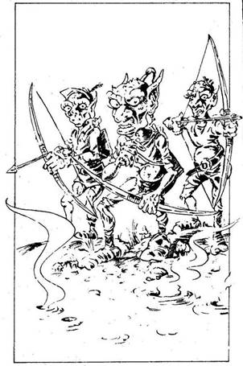
290.
Észreveszed, hogy előtted már mások is jártak ezen az úton, méghozzá nem is olyan régen. Újabb tisztás tárul eléd. Ez a 26-os Tisztás. Ha már jártál itt korábban, lapozz a 323-ra. Ha nem, olvass tovább! Amint beteszed a lábad a tisztásra, egy nyílvessző zúg el a fejed mellett. Három, íjjal felfegyverzett, toprongyos MOCSÁRI ORKOT pillantasz meg. A másik két Ork is kilövi nyilát. Ha van egy Arany Mágnes Amuletted, lapozz a 83-ra. Ha nincs, lapozz a 151-re.
291.
A Tűz-varázslatot alkalmazod a Víziszörnnyel szemben, de a szörny teste nyálkás, nedves. Egyáltalán nem gyullad meg! Lapozz a 82-re, és küzdj meg vele!
292.
Elmondod a Kertek Mesterének, mi járatban vagy. Fejcsóválva, szomorúan leveszi a nyakából a Virág Amulettet, és a nyakadba akasztja. Amikor az Amulett hozzád ér - megbénulsz! A Kertek Mestere mélyen a szemedbe néz, és követeli, hogy mondd el neki az igazat önmagadról. Nem tudsz kibújni az igazmondás alól. Fejét ingatva így szól: „Nem vagy rossz ember, de gonosz urat szolgálsz. A legtöbb, amit ajánlhatok neked, hogy légy résen!” Visszaveszi az Amulettjét, és távozik. Végül visszanyered uralmadat végtagjaid felett, és elindulsz nyugat felé. Lapozz a 363-ra.

293.
Félelmet varázsolsz az Egyszarvúval szemben. Az felnyerít, és gyorsan elfut. Egy pillanat múlva már el is tűnik a szemed elől. Lapozz a 348-ra.
294.
A Barátság-varázslatot alkalmazod a Farkasok Mesterével szemben, és kíváncsian várod, mi történik. Működik-e majd? A Farkasok Mestere hirtelen felnevet: „Gyere, gyere!” - hívogat a házába, miközben a Farkasok utat engednek neked. Ha meglepetésszerűen rátámadsz, lapozz a 271-re. Ha úgy teszel, ahogy mondta, és beszélgetésbe elegyedsz vele, lapozz a 172-re.
295.
A Rút Ivadék folyó partján, egy kicsiny földnyelven állsz. A 33-as Tisztáson vagy. A túlpart legalább kétszáz méterre van tőled. Krokodilokat és más furcsa teremtményeket látsz a vízben. Mit teszel?
Kelet felé indulsz a part mentén? Lapozz a 183-ra.
Délnek fordulsz? Lapozz a 94-re.
A Jég-varázslatot alkalmazod? Lapozz a 89-re.
296.
Bátran nekivágsz a mocsárnak. Bátor vagy, ugyanakkor vakmerő is. Bár a varázserejű Rézgyűrű megvéd attól, hogy eltévedj, hamarosan elfáradsz, így mindenféle ismert és ismeretlen teremtmények megsebesítenek. Rájössz, hogy ha nem szerzel magadnak még több varázsszert, kevés reményed marad rá, hogy megmenekülj a mocsárból, és nem lesz rá lehetőséged, hogy megismerd annak titkát. Tedd próbára a SZERENCSÉDET! Ha SZERENCSÉD van, lapozz a 272-re. Ha nincs SZERENCSÉD, lapozz a 3-ra.

297.
Menekülés közben surrogó hangot hallasz. Megfordulsz, és látod, hogy Bakó az, egy repülőszőnyegen. Hirtelen megfordulsz, és kirántod a kardodat. De késő! Bakó Erőt varázsolt magának. A tarkódnál fogva megragad és fölemel. Felordítasz, amikor a szőnyeg a magasba röpül veled. Ekkor lelök a mélybe! Zuhansz, zuhansz… majd minden elsötétül a szemed előtt. Kalandodnak itt vége.
298.
Kirohansz a szobából, le a sötét folyosón, ki a szörnyű ajtón át. Hamarosan magad mögött hagyod a gonosz varázsló várát. Emberek és állatok ellen harcoltál, kockára tetted az életedet… és mindezt miért? A gonosz varázsló veszélyes, hálátlan úr. Már tudod: szerencséd volt, hogy ilyen könnyen megmenekültél Bakó karmai közül. De legalább megmentetted az életedet! Tudod: bár küldetésed nem járt sikerrel, mégis nagy szolgálatot tettél a világnak azzal, hogy megszabadítottad a gonosz varázslótól. Elhatározod, hogy legközelebb majd jobban meggondolod, kinek a szolgálatába állsz. Kalandod itt véget ér.
299.
A Félelem-varázslatot alkalmazod. Talán a félelem visszafordulásra készteti a vadállatot. Sietve varázsolsz. A hatás fantasztikus! A Ronda Vadállat farolva megáll, majd szánalmasan felnyögve átfut a tisztás túloldalára, é elrejtőzik a sziklák mögött. Ha utánamész, hogy ott támadd meg, lapozz a 176-ra. Ha inkább visszafordulsz és ugyanazon az ösvényen távozol, amelyen jöttél, lapozz a 279-re.

300.
Nem látod sehol az Óriást; biztosan elment. Folytatod az utadat. Lapozz a 161-re.
301.
Két Útonálló pihen a tisztáson, mely valószínűleg megszokott találkozóhelyük. Amikor megpillantanak, felpattannak és támadnak. Mindkettőjükkel meg kell küzdened.
ÜGYESSÉG ÉLETERŐ
Első Útonálló 8 10
Második Útonálló 8 11
Mindkét Útonálló külön támad rád mindegyik fordulóban, de neked kell eldöntened, melyikkel csapsz össze. Támadd meg a kiválasztott Útonállót a szokásos módon. A másikat viszont, még ha a te Támadóerőd is a nagyobb, nem sebzed meg. Úgy kell venned, mintha kivédted volna a támadását. Ugyanakkor ha az ő TÁMADÓEREJE a nagyobb, ő sebzett meg a szokásos módon. Bármikor Elmenekülhetsz. Ha menekülsz, lapozz a 19-re. Ha megölöd a két Útonállót, lapozz a 246-ra.
302.
Kiejted a Farkasok Mesterétől tanult varázsszavakat. A hatalmas szörnyek hízelegni kezdenek neked, és a nyelvüket lógatják. Megvakargatod a fülük tövét, és rájuk parancsolsz: „Feküdj!” Lapozz a 247-re.
303.
Visszatértél arra a tisztásra, ahol a SKORPIÓ hordával találkoztál. Kíváncsian nézel körül, Vajon itt vannak-e még. Igen… itt vannak, minden irányból feléd özönlenek! Most azonban támadásuk nem ér váratlanul. Lapozz a 70-re.
304.
Észak felé haladva a mocsár kezd megváltozni: Már nem olyan sötét, és egyre inkább trópusi dzsungelre kezd hasonlítani. Színes tollú madarak röpködnek a fákon. A 14-es Tisztáson vagy! Ha már jártál itt korábban, lapozz a 149-re. Ha még nem jártál itt, olvass tovább! Előtted, egy alacsony ágon, hatalmas piros-sárga Papagáj ül. Ahogy közelebb mész, beszélni kezd hozzád! „Ki vagy, és mi dolgod a Madarak Mesternőjével?” - kérdi. Mit teszel?
Megtámadod a Papagájt? Lapozz a 71-re.
Azt mondod neki, hogy szeretnél találkozni
úrnőjükkel? Lapozz a 131-re.
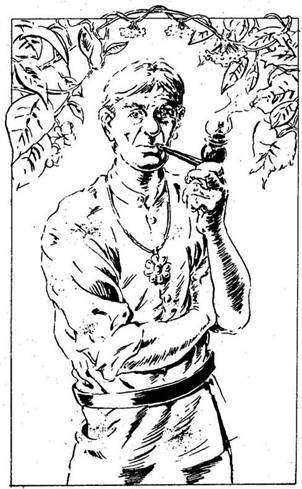
305.
A keleti ösvény rendkívül gondozott; a fák és bokrok nem hajolnak be az ösvényre, hanem szépen vissza vannak nyesve. Nemsokára kellemes tisztáson találod magad. A 27-es Tisztáson vagy! Ha már jártál itt korábban, lapozz a 238-ra. Ha még nem, olvass tovább! Körös-körül százféle növényt látsz, nemegyet teljes virágpompában - valamennyi ápolt és gyönyörű. Első pillantásra szinte el sem hiszed, hogy mindez valóság, olyan szép. És ha valóság, akkor ez nem lehet afféle egyszerű kert. Amikor körülnézel, középkorú férfit látsz feléd közeledni. Magas, vállas fickó, Piszkos kerti ruhában. Azonban a nyakában lógó Virág Amulettről tudod, hogy nem kerti munkás ő, hanem maga a KERTEK MESTERE. Rézgyűrűd elárulja, hogy barátságos. Kinek szolgálsz?
Selatornak, a jó varázslónak? Lapozz a 36-ra.
Vasöklűnek, a titokzatos
varázslónak? Lapozz a 84-re.
Bakónak, a gonosz
varázslónak? Lapozz a 334-re.
306.
A Csavargó mérgesen vár rád. Míg távol voltál, ÉLETERŐ varázslattal visszanyerte összes elvesztett ÉLETERŐ pontját. Ismét meg kell küzdened vele. Lapozz a 378-ra.
307.
Tüzet varázsolsz a Félelem Virágai ellen. Sok közülük megég, de sok sértetlen marad. Meg kell próbálnod elmenekülni. Lapozz a 269-re.
308.
Végre kimúlik a Víziszörny. Kardoddal levágod a homlokáról az Ibolyaszínű Drágakövet. Ezt követően elhagyod a tisztást. Az egyetlen kivezető ösvényen nyugati irányba mész. Lapozz a 330-ra.
309.
Három ösvényen hagyhatod el a tisztást. Merre mész?
Északnak? Lapozz a 47-re.
Délnek? Lapozz az 53-ra.
Nyugatnak? Lapozz a 388-ra.
310.
A Tűz-varázslatot alkalmazod a Rákfű ellen. A fű nem pusztul el, de visszahúzódik, és engedi, hogy biztonságban távozhass. Lapozz a 187-re.
311.
A Nyálka megragad, érintése éget. Visszamászol. Az égés 2-vel csökkenti ÜGYESSÉGEDET. Ha visszarohansz arra, amerre jöttél, lapozz a 85-re. Ha meg akarsz küzdeni vele, lapozz a 171-re.
312.
Az Óriásskorpió fenyegetően emeli fel ollóit. Nem sérültek meg túlzottan. A Törpe nyilván nem volt tapasztalt harcos:
Óriásskorpió ÜGYESSÉG 9 ÉLETERŐ 10
Ha úgy döntesz, hogy Elmenekülsz, lapozz a 88-ra. Ha megölöd az Óriásskorpiót, lapozz a 324-re.
313.
A folyó vize meleg, és érzed, amint a jég olvadni kezd a lábad alatt. Apró darabokra hullik szét. Megmarkolod a kardodat, és kétségbeesetten úszni kezdesz a part felé, de páncélod túl nehéz… Egyre mélyebbre merülsz a vízbe, s végül belefulladsz a folyó fenekének iszapjába. Kalandod itt véget ér!
314.
Két út közül választhatsz. Ha észak felé indulsz el, lapozz a 90-re. Ha keletnek mész, lapozz a 195-re.
315.
Tedd próbára a SZERENCSÉDET! Ha SZERENCSÉD van, lapozz az 51-re. Ha nincs SZERENCSÉD, a padlóban lévő süllyesztő kinyílik, és lezuhansz a mélybe. Amikor magadhoz térsz, látod, hogy testedet vastag láncokkal kötözték meg. Bakó mosolyog rád, de ez a mosoly nem valami megnyerő. Elszörnyedve nézed, mi van a kezében. Kalandod itt véget ér!
316.
Sajnos egyetlenegy varázsgolyód sincs, amit eladhatnál. „Hát ez nagy baj - mondja -‚ szívesen segítenék rajtad, de a gyógyszereim igen drágák, és már így is elég sokat vesztettem ezen az üzleten.” Ha úgy döntesz, hogy most távozol, lapozz a 100-ra. Ha mérgedben rátámadsz Vasöklűre, lapozz a 341-re.
317.
Elmondod, mi járatban vagy. Az Óriás elgondolkodva vakarja meg a fejét. Hallott a magukat Mestereknek nevező varázslókról, de még nem volt velük dolga. Amikor pontosabb leírást adsz a varázslókról, mégis így szól: „Egyszer mintha láttam volna egy gyönyörű kertet a mocsár közepén… tőlünk kissé északnyugatra. De innen nem vezet oda közvetlen ösvény. Lehet, hogy az a tisztás a Kertek Mesterének a tulajdona.” Megköszönöd az információt és továbbmész. Lapozz a 161-re.
318.
„Talán segíthetnek” - gondolod, és Barátság-varázslattal próbálkozol a vezérükkel szemben. Ezután előlépsz és üdvözlöd őket. Néhány Útonálló ki akar fosztani, de a vezérük megállítja őket azzal, hogy tetszik neki a képed. Megkérdi, miben lehetne a segítségedre. Lapozz a 214-re.
319.
Sietve eldöntöd, merre menj. Melyik irányba mész?
Északra? Lapozz a 138-ra.
Keletre? Lapozz a 47-re.
Nyugatra? Lapozz a 66-ra.

320.
Az ösvény most kissé meredeken halad lefelé, és egy újabb füves tisztáshoz ér. Ez a 29-es Tisztás. Ha már jártál itt korábban, lapozz a 265-re. Ha nem voltál még itt, olvass tovább! A tisztás közepén egy fehér állat fekszik. Először azt hiszed, hogy ló, de amikor feléd fordul, kiderül, hogy EGYSZARVÚ. Úgy látod, megsebesült; hatalmas karmolások nyoma éktelenkedik az oldalán. Mégis lábra áll, és szarvát lehajtva, prüszkölve rád támad. Mit teszel?
Elfutsz? Lapozz a 368-ra.
Megküzdesz vele? Lapozz a 221-re.
Varázsolsz egyet? Lapozz a 119-re.
321.
Arra gondolsz, hogy talán a folyón lefelé úszva eléred hidat, vagy találsz egy ösvényt, melyen keleti irányba mehetsz. Hosszú az út lefelé, úgyhogy körültekintően készülj fel. Lapozz a 30-ra.
322.
A Hervasztás-varázslat teljesen kiszárítja a Rákfüvet. Letaposod a halott fűszálakat. Lapozz a 81-re.
323.
Azon a tisztáson vagy, ahol a Mocsári Orkokkal találkoztál. Ha lekaszaboltad őket, lapozz a 309-re. Ha nem ölted meg őket, lapozz a 281-re, és küzdj meg velük ismét!
324.
A szörny halott. Megnézed a Törpét. Úgy látod, már nem lélegzik. Mit teszel?
Azonnal elhagyod a tisztást? Lapozz a 88-ra.
Feléleszted a Törpét egy
Áldás-varázslattal? Lapozz a 383-ra.
Átkutatod a Törpe bőrpáncélját? Lapozz a 42-re.
325.
Úgy döntesz, hogy átfutsz a hídon, mielőtt még elolvadna. Sajnos túl lassú vagy! Olvadni kezd a lábad alatt, és darabokra törik. Ha van még Jég-varázslatod, lapozz a 369-re. Ha nincs, lapozz a 43-ra.
326.
Végignéz a törött asztalon, a szanaszéjjel heverő könyveken, az összezúzott edényeken, a Szobor darabjain… majd ismét feléd fordul. Arca eltorzul a dühtől és megvetéstől. „Minek törődjek én veled? - kérdi. - Még arra sem voltál jó, hogy megvédj egy kicsinyke Szobrot, és tönkretetted a dolgozószobámat! Mit teszel?
Odakúszol a lábához, és bocsánatért
esedezel? Lapozz a 98-ra.
Megfordulsz és elfutsz? Lapozz a 315-re.
Figyelmezteted, hogy ő volt az, aki a
Harcot kezdeményezte a
dolgozószobájában? Lapozz a 225-re.
327.
Sokkal veszélyesebb, mint gondoltad. Ki hitte volna, hogy egy ilyen kövér, nevetséges külsejű ember ilyen jó harcos? Megfordulsz, és kiugrasz az ablakon, hogy elmenekülj. De vesztedre lent tömeg vár. Az ugrástól majdnem meghalsz. Mielőtt magadhoz térnél, két megtermett őr hátraköti a kezedet. Árulásod miatt hosszú időt fogsz még eltölteni ebben a sötét birodalomban. Kalandod itt véget ér.

328.
Az Óriás nem is olyan rossz, mint amilyennek látszik - valami más miatt mérges. A Barátság-varázslatot alkalmazd. Az Óriás megrázza a fejét, majd felnevet, és földre dobja a buzogányát. „Miket is beszélek! - mondja. - Ez nem a te hibád! Ne haragudj, bocsáss meg, valaki feldühített. Mi járatban vagy itt? Ha tudok, segítek neked.” Boldog vagy, hogy varázslatod megkímélt a vérontástól, és elmeséled neki küldetésed célját. Kinek szolgálsz?
Selatornak? Lapozz a 244-re.
Bakónak? Lapozz a 317-re.
Vasöklűnek? Lapozz a 103-ra.
329.
A tisztás, ahol a Békák Mesterével találkoztál, most üres. A gyenge fényben észreveszed, hogy valami pislákolni kezd a gombán, ahol a Békák Mestere eddig pihent. Odamész és megnézed, mi az. Ez a gomba más, mint a többi. Peremének egyik részén emberi fogak nyomát fedezed fel. Megszagolod; a szaga jó. Ha akarod, ehetsz egy keveset a gombából; lapozz a 178-ra. Ha inkább nem nyúlsz hozzá és újra észak felé veszed az utadat, lapozz a 352-re.
330.
Egy tisztáson vagy, ahol egy hatalmas faodú van. Ha már láttad azt a teremtményt, amelyik az odúban lakik, lapozz a 129-re. Ha nem láttad, ki vagy mi él a fa odvában, lapozz a 268-ra.
331.
Visszaértél arra a tisztásra, ahol a nagy Sas fészkelt. Csupán a nagy fát látod, és rajta a fészket. Ha már megküzdöttél a Sassal, lapozz a 202-re. Ha még nem harcoltál vele, lapozz a 112-re.
332.
Nem veszel tudomást gyűrűd figyelmeztető jelzéséről - barátságosan szólítod meg a Pókok Mesterét. Nagyon kedvesen válaszol, s megkérdi, mi járatban vagy. Amikor épp válaszolnál neki, éles fájdalom hasít a tarkódba. A Pókok Mestere vidáman felnevet. Megfordulsz, és egy kézfej nagyságú fekete pókot veszel észre: a fejed fölött lóg. Amikor mérge szétárad a testedben, a földre zuhansz és mozdulni sem bírsz. Még látod, hogy a Pókok Mestere átkutatja a hátizsákodat, hogy megnézze, mit zsákmányolt. Ekkor valaki hátulról megragad. Felvonszol a fára, bevon pókhálóval, aztán fellógat. Egy-két hét múlva a pókok remek lakomája leszel. Kalandod itt véget ér.
333.
„Én tanultam növénytant - válaszolja a Csavargó - és hallottam, hogy létezik ilyen növény, de azt nem tudtam, hogy itt nő. Ha keletnek mész, Ott megtalálod a Kertek Mestere nevű jó varázsló birtokát. Ha más nem, ő biztosan megmondja neked, hol találod meg a növényt, amit keresel. Megköszönöd a segítségét, és továbbmész. Lapozz a 234-re.
334.
A Kertek Mestere nyakában egy Amulettet látsz, melyet meg kell szerezned. Mit teszel:
Kardoddal rátámadsz? Lapozz a 379-re.
Varázsolsz egyet? Lapozz a 152-re.
Békésen elbeszélgetsz vele? Lapozz a 37-re.
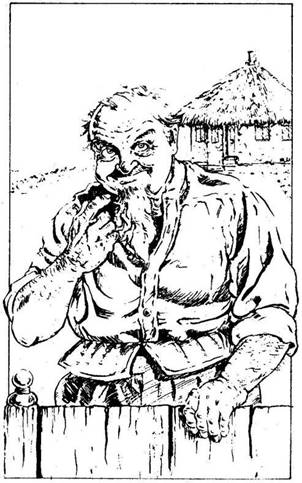
335.
A nehéz öntöttvas lámpák alatt fejedet lehajtva elhagyod a kocsmát. A kinti fény oly erős, hogy szinte megvakít egy percre. Elindulsz az úton lefelé, de nem igazán tudod, merre is visz. Az egyik üzlet ablakán észreveszel egy öregembert, üdvözlöd, aztán megkérdezed, nem tudja-e, hogy hol találod Selatort, a jó varázslót. A tulaj előbb gyanakodva szemlél, de aztán barátságosan eligazít. Nemsokára megint eltévedsz, de egy pirospozsgás arcú asszony segít. Szemmel láthatólag itt mindenki tudja, hol lakik Selator. Végül elérsz a falu szélén egy kis házhoz. Selator alacsony, testes ember, fehér ingben és vászonnadrágban tesz-vesz a kertjében, amikor a kerítéséhez érkezel. Elmeséled, mi járatban vagy. Elmosolyodik, és megkérdezi, vajon miből gondolod, hogy képes leszel átjutni a mocsár útvesztőjén. Ha elárulod neki a gyűrűd titkát, lapozz a 371-re. Ha inkább megőrzöd a titkodat, lapozz a 96-ra.

336.
Rendkívül mocsaras részhez érkeztél. A föld csak úgy cuppog a lábad alatt. Az ösvény kissé elkanyarodik, és egy nagy tó partja mellett vezet tovább. Ekkor veszed észre, hogy van egy másik ösvény is, melyen tovább lehet menni a tisztásról. A 28-as Tisztáson vagy! Ha már voltál itt korábban, lapozz a 137-re. Ha még nem, olvass tovább! A víz felszíne csúnyán fodrozódik, és zöld nyálka borítja. Soha nem fogsz ebből a vízből inni, az biztos! A víz tetején lévő hab hirtelen kezd összeállni. Megdöbbenve látod, hogy kiemelkedik a vízből, elborítja az ösvényt és elzárja előled az utat. Ez a nyúlós tömeg nem más, mint a NYÁLKA. Két méter hosszú, és irdatlan bűzt áraszt, amint feléd hömpölyög. Mit teszel?
Elfutsz előle? Lapozz a 85-re.
Megpróbálod átugrani? Lapozz a 257-re.
Kardoddal megtámadod? Lapozz a 171-re.
Varázsolsz egyet? Lapozz a 400-ra.
337.
Tűzvarázslatot alkalmazol az Egyszarvú ellen. Sörénye lángra lobban, de az Egyszarvú saját varázsereje megszünteti a te varázslatodat. Meg kell küzdened vele! Lapozz a 221-re.
338.
Felismered a tisztást, ahol a Skorpióval és a Törpével találkoztál. Semmi egyebet nem találsz itt, mint néhány csontot és egy bőrpáncélt. Lapozz a 88-ra.
339.
Amikor a híd leszakad, sikerül felkapaszkodnod a legnagyobb fadarabra. Ezen hajózol le a folyón kelet felé. A partot mindkét oldalon sűrű dzsungel szegélyezi. Egyszer csak egy kőhíd tűnik fel előtted. Ha megpróbálsz felkapaszkodni rá, amikor elúszol alatta, lapozz a 384-re. Ha inkább továbbúszol és megvárod, míg jobb menekülési lehetőséged akad, lapozz a 313-ra.
340.
Kardod éle mélyen bevágódik a mellébe. Döbbenten néz rád, valamit mondani szeretne, de… meghal. A fűrészfogú kard kihullik a kezéből. Ilyen kardot még nem láttál, kíváncsian emeled föl a földről. Azonnal rádöbbensz, hogy ez egyike a nagy erejű Varázskardoknak, és tulajdonosának jutalma 2 ÜGYESSÉG pont. Nem csoda hát, hogy oly jó harcos volt ellenfeled! Elindulsz, hogy átkutasd a vészjóslóan zord várat, hogy megtudd, milyen kincsek rejlenek benne. A levegő azonban egyre sűrűbb, nyomasztóbb lesz… Gyűrűd még mindig a gonosz jelenlétére figyelmeztet, ha lehet még erőteljesebben, mint korábban! Kénkő szagát érzed. Ha még maradsz, hogy körülnézz, mit rejt a vár, lapozz a 375-re. Ha inkább azonnal távozol, lapozz a 298-ra.
341.
Felháborít közönyös viselkedése veled szemben, azok után, hogy az életedet kockáztattad érte. Kirántod a kardodat, és megtámadod. Meglepődik, de kivédi első csapásodat. Hatalmas testéhez képest igen fürgén mozog. Íróasztala mögül felkap egy kardot, és azzal védekezik. Gyorsan rájössz, hogy veszélyes ellenfél.
Vasöklű ÜGYESSÉG 9 ÉLETERŐ 14
Elállja az ajtót, úgyhogy ha Menekülni akarsz, csak az ablakon át távozhatsz. Ha ezt teszed, lapozz a 327-re. Máskülönben, miután 6-ra vagy még ennél is kevesebbre csökkentetted Vasöklű ÉLETERŐ pontjainak számát, lapozz a 372-re.
342.
Felismered azt a tisztást, ahol a hatalmas Óriással találkoztál. Ha megölted az Óriást, lapozz a 197-re. Ha nem ölted meg, lapozz a 300-ra.
343.
Ahhoz a tisztáshoz közeledsz, ahol először találkoztál az Útonállókkal. Ha akkor barátságban váltál el tőlük, lapozz a 199-re. Ha elfutottál előlük vagy becsaptad őket, esetleg néhányat megöltél közülük, lapozz a 301-re.
344.
A Farkasok behúzzák farkukat és vonítani kezdenek, aztán elsomfordálnak. Lapozz a 247-re.
345.
Amint a tisztás felé közeledsz, ahol legyőzted a Pókok gonosz Mesterét, forróságot kezdesz érezni. A tisztás lángokban áll. Nem tudsz átmenni rajta. A fojtogató füst miatt vesztesz 1 ÉLETERŐ pontot. Lapozz a 165-re, és ugyanazon az ösvényen menj tovább, amelyen a tisztásra jöttél.

346.
Félelmet varázsolsz az Orkokkal szemben. Az egyik Ork felordít, és fegyverét eldobva visszarohan a mocsárba. A másik kettő tovább támad. Lapozz a 281-re, és küzdj meg velük!
347.
Illúzió-varázslattal növénnyé változtatod magadat. A Kertek Mestere döbbenten néz! Elindul feléd. Amikor a közeledbe ér, megpróbálod lerántani a nyakából az Amulettjét, de a hirtelen mozdulat megtöri a varázslatot, és a Kertek Mestere még idejében elugrik. Ha karddal támadsz rá, lapozz a 379-re. Ha elfutsz a tisztásról, lapozz a 363-ra.
348.
A tisztásról négy kijárat nyílik. Merre mész?
Északra? Lapozz a 94-re.
Délre? Lapozz a 157-re.
Keletre? Lapozz a 10-re.
Nyugatra? Lapozz a 204-re.

349.
Vállat vonsz, és kimész a szobából. Végigmész a sötét folyosón, kilépsz a ronda kapun. Előtted van a falu, mögötted a gonosz vára. Harcoltál emberek és állatok ellen, kockára tetted az életedet… És mindezt miért? A gonosz, úgy látszik, veszélyes és hálátlan gazda. Most már tudod, hogy szerencsés vagy, amiért ilyen könnyen megmenekültél Bakó karmai közül. Élsz! Elhatározod, hogy a jövőben jobban megválogatod, kinek a szolgálatába állsz! Kalandod itt véget ér!
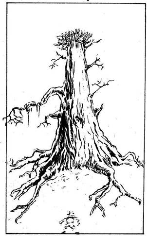
350.
Egy tisztáson vagy. Szikkadt talajából hatalmas fa emelkedik a magasba. A fa tetején vesszőkből rakott fészek van. A 16-os Tisztáson vagy! Ha már jártál itt korábban, lapozz a 331-re. Ha még nem, olvass tovább! Miközben a fészket nézed, egyszer csak hangos szárnysuhogást hallasz a fejed fölött. Egy hatalmas SAS kering a magasban, és téged néz. Van nálad:
Néhány papagájtoll? Lapozz a 392-re.
Egy ezüst Madár Amulett? Lapozz a 25-re.
Semmi ilyesmi nincs nálad? Lapozz a 233-ra.
351.
Félsz Bakó ellen a saját varázslatát alkalmazni: ez veszélyes lehet. Helyette Illúziót varázsolsz - vagy legalábbis megpróbálod. Bakó meglengeti karját, és érzed, hogy a varázslatod kissé bizonytalankodva elhal, még mielőtt alakot öltene. „Nem csapsz be ezekkel a gyerekes trükkökkel! - mondja gúnyosan. - Készülj a halálra, te bolond!” Lapozz a 124-re.
352.
Az egyetlen ösvény, amely a tisztásról nyílik, nem más, mint amelyiken idejöttél. Elindulsz észak felé, ahol nemrég a Mocsári Orkokkal küzdöttél meg. Megmarkolod a kardodat, hátha ismét szükséged lesz rá. Lapozz a 323-ra.
353.
Durván megsértetted az Útonállókat. Úgy érzik, megfelelő alkalmat adtak rá, hogy bebizonyítsd, milyen is vagy, de te nem jártál el tisztességesen. Most mindegyikükkel meg kell küzdened! Lapozz a 235-re.
354.
Amikor kihúzod a kardodat gonosz ellenfeled testéből, megkönnyebbülten sóhajtasz fel. Körülötted azonban pókok tömege hemzseg. Egyre közelebb és közelebb kerülnek hozzád. Lehajolsz, és leemeled a Pók Amulettet a tetemről. Ebben a pillanatban egy szikra pattan ki belőle, és lángra lobbantja a Pókok Mesterének tetemét! Rohanva menekülsz. Mögötted a lángok egyre terjednek, és reméled, hogy elpusztítják valamennyi gonosz pókot. Lapozz a 165-re.
355.
Már ismerős az út Fűzfaliget felé. Ám amikor beérsz a városba, érzed, hogy valami mégis megváltozott. Látod, hogy az emberek mind téged néznek, és kiáltásokat hallasz. Hőstetted híre mindenkihez eljutott. Mohó tekintetek kísérnek, és egyre kényelmetlenebbül érzed magad. Amikor letérsz egy mellékutcába, érzed, hogy valaki követ. Megfordulsz, és észreveszed, hogy két rongyos ZSEBTOLVAJ eredt a nyomodba abban a reményben, hogy ellopja tőled azt a kincset, amit feltehetőleg a mocsárban szereztél. Nincs már időd varázsolni, sőt menekülni sincs hova - meg kell küzdened velük!
ÜGYESSÉG ÉLETERŐ
Első Zsebtolvaj 7 5
Második Zsebtolvaj 8 5
Küzdj meg az Elsővel, majd a Másodikkal. Ha mindkettőt megölöd, lapozz a 186-ra.
356.
A Víziszörnnyel szemben a Félelem-varázslatot alkalmaztad, de az nem működik. A szörny ugyanis túl buta ahhoz, hogy félelemérzete legyen. Rád támad. Lapozz a 82-re.
357.
Ezzel a két nyílvesszővel is rosszul céloztak… de repülés közben irányt változtatnak és a mellkasodba fúródnak! Vesztesz 5 ÉLETERŐ pontot! Ha még ezután is életben vagy, rájössz, hogy az Arany Mágnes, amit a halott harcostól vettél el, meg van átkozva! Utolsó tulajdonosának ez volt a bosszúja, és majdnem belehaltál! Az Orkok további nyilakért nyúlnak… Mit teszel?
Karddal támadsz rájuk? Lapozz a 281-re.
Varázsolsz egyet? Lapozz a 399-re.
Futva mented az életedet? Lapozz a 309-re.

358.
Elteszed a pénzt, amit adott, és távozol. Elgondolkozol azon, vajon helyesen cselekedtél-e? Attól félsz, hogy a pénz, amit kaptál, mocskos, de nem tudsz mit tenni. Legközelebb, ha ilyen vállalkozásba fogsz, majd jobban megválasztod, kinek a szolgálatába állsz! Kalandod itt véget ér!

359.
Nem hiszed, hogy a Békák Mestere nagyon barátságos lenne hozzád, ha tudná küldetésed igazi célját. Ezért aztán kitalálsz egy történetet. „Fang bárójának, Sukumvitnek a szolgálatában állok - kezded. - Ő küldött a Skorpiók Mocsarába, hogy Halállabirintusa számára új vadállatokat keressek. Amikor idejöttem, ebbe a mocsáron túli faluba, valamilyen Mesterekről hallottam, akikről szeretnék többet tudni. Ki vagy, és miért jöttél ide?” Tedd próbára a SZERENCSÉDET! Ha SZERENCSÉD van, lapozz a 162-re. Ha nincs SZERENCSÉD, lapozz a 16-ra.
360.
„Jól harcoltál!“ - kiáltja az Útonállók Vezére, miközben a karjához kap, ahol pengéd belévágott. „Ez jó csata volt!” Egyik társa bekötözi a sebét, míg a másik vízzel kínál a saját kulacsából. Nevetgéltek, viccelődtök, mintha régi barátok volnátok. Lapozz a 214-re.
361.
A Barátság-varázslatot választottad. A Pókok Mestere egy pillanatra megriad, majd mosolyogva így szól:
„Ó… látom, barátsággal vagy irántam.” Viszonzod mosolyát, és elmeséled neki, mi járatban vagy erre. Ekkor hirtelen hasító fájdalmat érzel a tarkódon. A Pókok Mestere jókedvűen felnevet. Megfordulsz, és egy akkora fekete pókot látsz, mint a kézfejed. A pók feletted lóg. Amikor mérge szétterjed a testedben, tehetetlenül a földre rogysz. Látod, hogy a Pókok Mestere átkutatja a hátizsákodat, hogy megnézze, milyen zsákmányra tett szert. Egyszer csak érzed, hogy hátulról valaki megragad. Felhúz a fára, és pókhálóval takar be. Itt fogsz lógni mindaddig, míg egy vagy két hét múlva a pókok fel nem falnak. Kalandod itt véget ér.
362.
Ügyesen forgatod hatalmas kardodat. A Kardfák nem versenyezhetnek veled, és csakhamar mindegyikük karjait sikerül levágnod. Körbepillantasz a tisztáson. Nem látsz egyebet, mint néhány magot. Úgy gondolod, ezek a Kardfákról hullottak le. Zsebre vágod őket, és elindulsz. Lapozz a 22-re.
363.
Visszaérsz arra a tisztásra, ahol a Csavargóval találkoztál. Hogyan búcsúztál el tőle?
Barátságosan? Lapozz a 133-ra.
Megölted? Lapozz a 234-re.
Harcoltál vele és elmenekültél? Lapozz a 306-ra.
364.
Ismét azon a tisztáson állsz, ahol a gyógyvizű tó van. Amint mész, egy nyílvessző süvít el a fejed mellett - majd egy másik követi. Nem tudod, honnan jönnek. Visszarohansz az ösvényen, amerről jöttél. Lapozz a 47-re.
365.
Úgy döntesz, hogy a Félelem-varázslat lesz a legjobb ebben a küzdelemben. Máris varázsolsz, de Bakó fölemeli a karját, és abban a pillanatban a varázslat rajtad fog! A félelem vasmarka szorítja össze a szívedet! Vesztesz 1 ÜGYESSÉG pontot! Lapozz a 124-re.
366.
Legyőzted az Óriást! Átkutatod hatalmas testét, de rézszögekkel kivert buzogányán kívül semmit nem találsz nála. Ez azonban túl nehéz ahhoz, hogy cipeld. Lapozz a 161-re.
367.
Két ösvényen mehetsz tovább a tisztásról. Ha észak felé fordulsz, lapozz a 304-re. Ha kelet felé tartasz, lapozz a 265-re.
368.
Ugyanazon az ösvényen kell visszamenned, amelyen erre a tisztásra eljutottál. Lapozz a 348-ra, és menj végig ezen az ösvényen.
369.
Rájössz, hogy egy újabb Jég-varázslattal sem tud megtartani a híd. Helyette egy jégtáblát varázsolsz magad alá, amelyen szépen lehajózhatsz a folyón kelet felé. A folyó mindkét partját sűrű dzsungel szegélyzi. Egyszer csak hatalmas kőhidat látsz magad előtt, mely átível a folyó fölött! Ha megpróbálod elkapni a szélét, hogy felmássz rá, amikor épp alatta úszol el a jégtáblán, lapozz a 384-re. Ha inkább továbbúszol és megvárod, míg más menekülési lehetőséged lesz, lapozz a 313-ra.
370.
A Jég-varázslat hatására a folyón jéghíd képződik, melyen simán átmehetsz. Innen északra vagy délre folytathatod az utadat. Ha észak felé indulsz el, lapozz a 157-re. Ha dél felé, lapozz a 398-ra.
371.
„Te vagy az, akire vártam! Tedd, amit tenned kell! - mondja boldogan mosolyogva, s téged büszkeség fog el. Majd így folytatja: - Elmondom, amit tudok! Egyszer régen egy Antherica nevű növény nőtt ezen a vidéken. Gyógyító erejű volt, és a Jó varázslók nélkülözhetetlen segédeszköze. A Gonosz varázslók viszont, ahol csak tudták, mindenütt kiirtották ezt a számukra szükségtelen növényt. Mindenki úgy tudja, hogy nem maradt belőle egy sem. Én viszont a tudományom és a kristálygömböm segítségével rájöttem, hogy egyetlenegy Antherica még létezik a Skorpiók Mocsarának a mélyén. Ez alacsony, sötétzöld bokor, fehér virágai és bíborszínű bogyói vannak. Ha csak egyetlenegy bogyóját is elhoznád nekem, varázserőmmel képes lennék újra meghonosítani mindenütt az Anthericát, hogy a Jó varázslók hasznát vehessék.
A mocsárban - folytatja a varázsló - számos kincs van, amit ha megtalálsz, a tiéd lehet. Én csupán az Antherica egyetlen bogyójára tartok igényt. Bár egy olyan jól felfegyverzett harcos, mint te, képes túlélni a mocsár borzalmait, mégis tudnod kell, hogy azon a vidéken sok olyan gonosz erő uralkodik, amely ellen a kardod mit sem ér. Nem tudlak varázslatokra megtanítani, de valamit azért tehetek érted. Adok neked hat varázsgolyót. Mindegyikkel egyszer tudsz majd varázsolni, de ha az összeset felhasználtad, akkor már csak éles kardodra és csavaros eszedre hagyatkozhatsz!” Megbeszéled Selatorral, melyik varázslatot használd. Hat különböző varázslatot választhatsz a VARÁZSLATOK listájáról, melyet a könyv elején találsz - de csak a SEMLEGES, illetve jó varázslatok közül választhatsz. Nem választhatsz GONOSZ varázslatot! Jegyezd fel választott varázslataidat a Kalandlapodra.
A kapott varázsgolyókat elrejted a zsákod mélyén, és Selatornak búcsút intve elindulsz a mocsár felé. Bár utad veszélyes lesz, a varázsló sok tanácsa és kedvessége felbátorít. Feladatod a következő: meg kell találnod az Anthericát, és egy bogyóját el kell hoznod Selatornak. Lapozz a 9-re, és vágj neki a kalandnak!
372.
Üvöltést hallasz lentről. A Goblin-cselédlány kiáltozik segítségért: „Őrök! Megöli a Mestert! Segítség!” Míg esélyeidet latolgatod, Vasöklű mögött felpattan az ajtó, és három piros páncélinget viselő őr ront be a szobába lövésre kész íjakkal. Parancsra sem várva máris lőnek! Nyilaik belefúródnak a melledbe, és élettelenül zuhansz a földre. Kalandod itt véget ér!
373.
Tedd próbára a SZERENCSÉDET! Ha SZERENCSÉD van, olyan gyorsan tudsz támadni, hogy te sebzed meg a varázslót. Lapozz a 225-re, de vonj le 2 ÉLETERŐ pontot ellenfeledtől, mielőtt belekezdenél a harcba. Ha nincs SZERENCSÉD, első csapásod célt téveszt - lapozz a 225-re, és harcolj a szokásos módon!
374.
Az ilyen vadállat ellen a legjobb varázsolni. Melyik varázslatot választod?
A Félelmet? Lapozz a 299-re.
Az Illúziót? Lapozz a 60-ra.
A Növesztést? Lapozz a 228-ra.
A Barátságot? Lapozz a 160-ra.
Egyiket sem? Lapozz a 11-re,
és válassz újra.

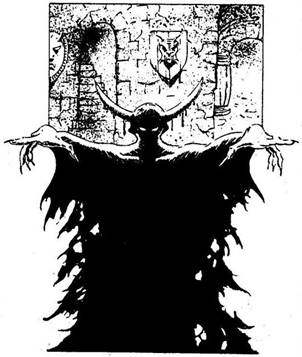
375.
Nem veszel tudomást a rettenetes bűzről, és átkutatod a várat. Boldogan hümmögsz magadban, amikor könyvekkel és aranyszobrocskákkal tömöd meg a zsákodat. Egyszer csak sziszegést hallasz. Megfordulsz, és egy nagy fekete árnyat látsz. Két ferde metszésű, izzó szem tapad rád a sötétben. „Köszönöm, halandó! - mondja a sziszegő hang. - Régóta várom a lelkedet! Most végre az enyém!” Menekülni próbálsz, amikor az árny átlibben Bakó teteme fölött. De menekülésre már nincs idő! Még el sem éred a bejárati ajtót, amikor a kénszag elviselhetetlenné válik. Ebben a pillanatban a vár vörösen izzani kezd, és felrobban! Kalandod itt véget ér!
376.
Elmondod neki, hogy csak Fűzfaligetbe akarsz eljutni és vissza. Meglepetés jeleit látod békapofáján. „Fűzfaliget messze fönn van, északnyugaton - mondja. - Kedvesnek látszol, úgyhogy elmondok neked valamit. Ne kövesd a Lidércfényt, mert életed odavész! És most jó napot, dolgom van!” Egy szempillantás alatt eltűnik. Békái hangosan brekegve elugrálnak. Körülnézel a tisztáson, de nem találsz senkit; az egyetlen út visszavezet északra. Megfordulsz, és visszatérsz arra a helyre, ahol a Mocsári Orkokkal találkoztál. Lapozz a 323-ra.
377.
Dobj két kockával! Ha a kapott összeg kevesebb vagy épp annyi, mint ÉLETERŐ pontjaidnak a száma, átugrod őket. Ha a kapott összeg nagyobb, mint ÉLETERŐ pontjaidnak a száma, nem ugrasz elég nagyot, és beléd harapnak. Vesztesz 3 ÉLETERŐ pontot! Ha még mindig életben vagy, lapozz a 319-re.
378.
A Csavargó nem buta ember, és megsejti, hogy te egy gonosz varázsló szolgálatában állsz. Leugrik a szikláról, és felszólít, hogy állj ki ellene.
Csavargó ÜGYESSÉG 10 ÉLETERŐ 10
Bármikor Elmenekülhetsz; ha így döntesz, lapozz a 234-re. Ha megölöd a Csavargót, lapozz a 219-re.
379.
Előrántod a kardodat, és rátámadsz a Kertek Mesterére. Döbbenten kérdezi: „Miért támadsz rám?” - Felordít, majd menekülni kezd. Mivel nem visel páncélruhát, gyorsan fut. Felkap egy sarlót, és elhelyezkedik a tisztás másik végében. Amikor beéred, karját meglengetve varázsol egyet. Vonj le magadtól 3 ÜGYESSÉG pontot.
Kertek Mestere ÜGYESSÉG 7 ÉLETERŐ 10
Bármikor Elmenekülhetsz, ha akarsz. Nyugat felé kell futnod, lapozz a 363-ra. Ha megölöd a Kertek Mesterét, lapozz a 251-re.
380.
A Hervasztás-varázslatot alkalmazod. A Nyálka színe megváltozik, amikor megérinti a varázslat, zöld helyett most barna, de semmi más nem történik vele. Ha egy másik varázslatot akarsz alkalmazni, lapozz a 400-ra. Ha egészen más taktikát akarsz alkalmazni, lapozz a 336-ra, és válassz ismét!
381.
Nem akarod megtámadni a sebesült Egyszarvút; mindig azt hallottad róluk, hogy ezek jó teremtmények. Az Áldás-varázslatot alkalmazod inkább. Az Egyszarvú remegni kezd, amint a varázslat megérinti. Majd boldog nyerítésbe kezd. Oldalán a seb már majdnem teljesen behegedt, és az állat sokkal erősebb. Még mindig vonakodik az ember közelébe menni, átballag a tisztás másik oldalára, és szarvával a földet kezdi túrni. Majd úgy látod, hogy elmegy. Megnézed a helyet, ahol az Egyszarvú tűrt. A földben két Varázsgolyót találsz, éppolyat, mint amilyet Selaror adott neked. Az egyikkel Barátságot varázsolhatsz, a másik visszaállítja a SZERENCSÉDET. Biztos vagy benne, hogy az Egyszarvú így akarta megköszönni a segítségedet. Továbbmész az utadon, lapozz a 348-ra.
382.
A Futóhomok tisztáson állsz. Ezúttal azonban már elővigyázatos vagy! Többféle lehetőségen gondolkodtál. Ha a Jég-varázslatot alkalmazod, megfagyaszthatod a Futóhomokot, és átmehetsz rajta, de a jég gyorsan elolvad. Ha a Növekedés-varázslatot alkalmazod, elérheted, hogy a Futóhomok körül magas indák nőjenek, amelyeknek a segítségével megmenekülhetsz most, vagy bármikor, amikor visszatérsz erre a tisztásra! Ha e két varázslat közül választasz, lapozz a 270-re. Ha egyiket sem választod, mit teszel?
Megpróbálod átugrani a
Futóhomokot? Lapozz a 190-re.
Megfordulsz, és egy másik ösvényen
mész tovább? Lapozz a 223-ra.
383.
Abban a reményben, hogy megmentheted a Törpét, az Áldás-varázslatot alkalmazod rajta. Szemhéja megrebben és már azt hiszed, győztél. Sajnos azonban a varázslat nem elég erős ahhoz, hogy valakit vissza lehessen hozni a halálból. Lapozz a 324-re, és válassz ismét.
384.
Baj nélkül felmászol az öreg hídra. A hidat alkotó hatalmas kőtömbök közötti rések elég szélesek ahhoz, hogy könnyen megkapaszkodhass bennük. Felmászol a hídra, majd átveted magad a korláton, és leugrasz. Lapozz a 101-re.
385.
Nem nagyon akarsz Bakó ellen az ő varázslataival fellépni - ez eléggé kockázatos lehet. Inkább a Tűz-varázslatot alkalmazod. Hosszú palástja lángra lobban, de Bakó sértetlen marad. Őrült nevetésben tör ki, miközben a lángnyelvek magasra csapnak körülötte. Lapozz a 124-re.

386.
A Tolvaj holtteste előtted fekszik. Nem volt olyan ügyes, mint ahogyan azt magáról hitte! Átvizsgálod a kosarát. Az egyetlen használható dolog, amit találsz, egy Piros Köpeny, melyet magadhoz vehetsz és besorolhatod Felszerelési Tárgyaid közé. Elmajszolsz egy kis sajtot, melyet a kosarából vettél ki, majd tovább folytatod az utadat. Lapozz a 179-re.
387.
Búvóhelyedről varázsolsz. Mit varázsolsz?
Átkot? Lapozz a 107-re.
Félelmet? Lapozz a 278-ra.
Illúziót? Lapozz a 148-ra.
Barátságot? Lapozz a 318-ra.
Egyiket sem? Lapozz a 65-re,
és válassz újra.
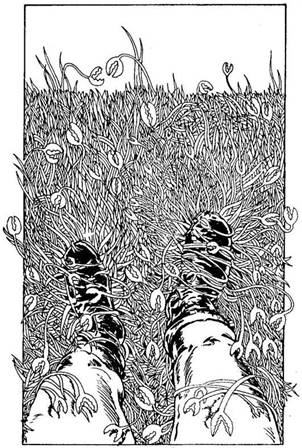
388.
Rövid séta után kellemes, füves tisztásra érkezel. Két másik kivezető ösvényt látsz. A 24-es Tisztáson vagy. Ha már jártál itt korábban, lapozz a 63-ra. Ha még nem, olvass tovább! Egy pillanatra megállsz, és körülnézel. Ekkor észreveszed, hogy valami furcsa dolog történt a fűvel. Oly gyorsan kezd el nőni körülötted, hogy szinte szabad szemmel is látni a változást. A fűszálak végén fogókat pillantasz meg, melyek téged céloznak meg. A RÁKFŰ tisztás kellős közepén vagy! Ha megpróbálsz a kardoddal harcolni a fű ellen, lapozz a 134-re. Ha inkább varázsolsz egyet, lapozz a 167-re.
389.
Selator leírása alapján nincs kétséged afelől, hogy az Antherica bokrot találtad meg. Küldetésed egyik részén túljutottál. Most vissza kell menned a faluba az értékes bogyóval. Az egyetlen ösvény, melyen visszaindulhatsz, déli irányba vezet. Lapozz a 342-re.
390.
Három ösvényen mehetsz tovább. Mindegyik ingoványosnak és veszélyesnek látszik. Merre mész?
Északnak? Lapozz a 144-re.
Keletnek? Lapozz a 209-re.
Nyugatnak? Lapozz a 195-re.
391.
Eldobod a kardodat, és odalépsz hozzá. Üdvözöl, de nem rettegve, hanem inkább szomorúan. Hirtelen száz és száz madár kezd röpködni körülötted - semmit nem látsz. Amikor eltűnnek, a lánynak csak a hűlt helye marad. Vesztesz 2 SZERENCSE pontot! Lapozz a 217-re.
392.
A Sas tudja, hogy ellenség vagy, és rád támad. Nem tudsz elmenekülni, mert a madár sokkal nagyobb és gyorsabb nálad. Csak a kardodban bízhatsz!
Sas ÜGYESSÉG 7 ÉLETERŐ 6
Ha legyőzöd a Sast, lapozz a 132-re.
393.
Meggyőződésed, hogy a Hervasztás-varázslat épp az ilyen helyzetekben a legcélszerűbb. Gyorsan alkalmazod is a Kardfákkal szemben. Legnagyobb örömödre a fák azonnal elszáradnak és kidőlnek. Körülnézel, merre találsz egy tisztást. Azt ugyan nem találsz, de néhány magot lelsz a földön, melyek talán a Kardfákról hullottak le. Zsebre vágod őket, és továbbmész. Lapozz a 22-re.
394.
Mostanra megtanultad, hogy vigyáznod kell. Figyelmesen szemléled a tavat és a tisztást. Egy hatalmas Gyík megy oda a tóhoz, iszik a vizéből, majd távozik. Semmi mást nem tapasztalsz itt. Ha el akarod hagyni a tisztást, lapozz a 47-re. Ha iszol a tó vizéből, lapozz a 77-re.
395.
Úgy döntesz, hogy a legközelebb lévő fogadóba, a Barna Medvébe mész. Lenn a kocsmában nagy a dínomdánom, de te, miután egy aranytallért fizetsz a fogadósnak, felmész a szobádba. Elaludni azonban nem tudsz, olyan zajt csapnak a mulatozók. Vesztesz 1 ÉLETERŐ pontot! Mit teszel?
A fejedre húzod a paplant, és nem törődsz
a zajjal? Lapozz a 116-ra.
Fogod a kardodat, és lemész, hogy móresre
tanítsd őket? Lapozz a 236-ra.
Fogod magad és továbbállsz a Görbe Lándzsa
fogadóba? Lapozz a 78-ra.
Fogod magad és továbbállsz Tankréd Táltos
Lovába? Lapozz a 289-re.
396.
„Fantasztikus! - kiált fel a Kertek Mestere. - Hát lehet, hogy valahol itt a mocsárban még mindig él az Antherica bokor? Éreztem, hogy ez a hely ritka kincset rejt! - mondja, majd elgondolkodik. Mikor kinyitja a szemét, így szól: - A növény, amit keresel, innen keletre van. De nincs olyan ösvény, mely közvetlenül oda vezetne; előbb el kell menned nyugat felé, majd onnan az óramutató járásával ellentétes irányban kell haladnod.” Sok szerencsét kíván neked, és átad egy Varázsgolyót, amely egy Jó varázslatot tartalmaz (te döntöd el, melyik lesz az!). Egyetlen ösvény vezet ki a tisztásról, azon indulsz el nyugati irányba. Lapozz a 363-ra.
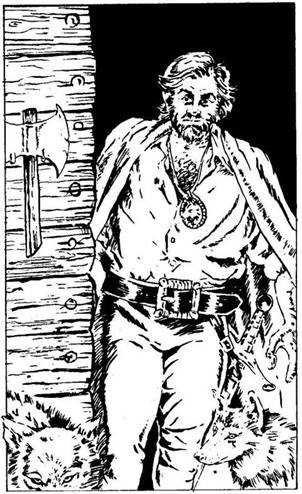
397.
Inkább elkerülöd ezt a szörnyet. Megfordulsz, és amilyen gyorsan csak tudsz, távozol. Az egyetlen ösvény, amelyen visszafordulhatsz, nyugat felé vezet. Lapozz a 330-ra.
398.
Közepes nagyságú tisztásra érsz, amelyen gerendákból épült házikó áll. A 4-es Tisztáson vagy. Ha már jártál itt előzőleg, lapozz a 239-re. Ha még nem jártál itt, olvasd tovább a szöveget. Egy kutya morgását hallod. Ekkor veszed csak észre, hogy nem kutya, hanem egy Farkas áll a ház mellett. Az ajtó kinyílik, és egy tagbaszakadt ember lép ki rajta. Egy másik Farkas ballag a nyomában. A férfi oldalán kard lóg, és ruhája olyan, mint egy erdészé, de Farkast ábrázoló Ezüst Amulettjéről tudod, hogy ő a FARKASOK MESTERE. Barátságosan üdvözlöd. Mogorván válaszol, és közli, hogy tűnj el. Mi teszel?
Engedelmesen elmész? Lapozz a 314-re.
Varázsolsz egyet? Lapozz a 191-re.
Megtámadod? Lapozz a 120-ra.
399.
Mit varázsolsz az Orkok ellen?
Félelmet? Lapozz a 346-ra.
Illúziót? Lapozz a 169-re.
Egyiket sem? Lapozz a 281-re.
400.
Mit varázsolsz a Nyálka ellen?
Tüzet? Lapozz a 188-ra.
Hervasztást? Lapozz a 380-ra.
Jeget? Lapozz a 282-re.
Egyiket sem? Lapozz a 336-ra,
és válassz újra!